每册绘本皆是由世界各地获奖作家及插画家精心创作的教育艺术作品。在精妙的文字及插图之间，孩子不知不觉中投入故事的幻想世界，超越文字界限，从艺术与语言中感受创意。
01 It's Bedtime, Charlie!
故事简介：Charlie一家去完动物园，爸妈和爷爷都感到很疲劳，但是，小Charlie迟迟不肯睡觉，他一会儿起床玩，一会儿看书，直至爸爸给他唱歌，才乖乖地进入梦乡。
主题：动物、睡觉习惯和常规、父母的爱和关怀
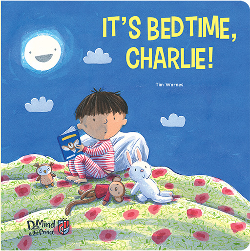
1.
What can you see in the picture?
I can see a boy sitting on his bed and some toys.
你能够在图画中看到什么？
我能够看到一个男孩坐在床上看书，他身边有一些玩具。
2.
What do you think the boy is about to do?
I think the boy is about to go to bed.
你认为男孩将要做什么？
我认为男孩要上床睡觉了。
3.
Are there times you do not want to go to bed? Why?
你有过不想上床睡觉的时候吗？为什么？
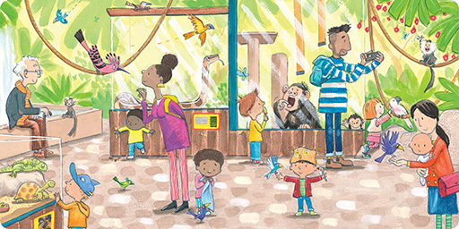
4.
Where is Charlie?
Charlie is at the zoo.
Charlie 在哪里？
Charlie 在动物园。
5.
What animals can you see?
I can see monkeys, birds, parrots, turtles, lizards and snakes.
你能够看见什么动物？
我能够看见猴子鸟类、鹦鹉、乌龟、蜥蜴和蛇。
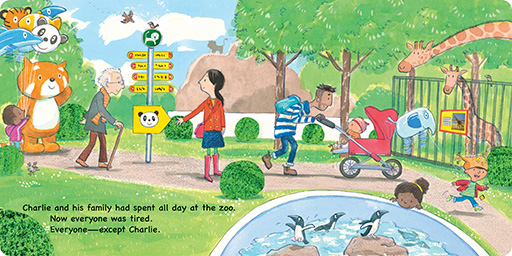
6.
What other animals can you see here?
I can see penguins, giraffes and lion.
你能够看见什么其他动物？
我能够看见企鹅、长颈鹿和狮子。
7.
Do you like going to the zoo? What is your favourite animal at the zoo?
你喜欢去动物园吗？你最喜欢动物园里的什么动物？
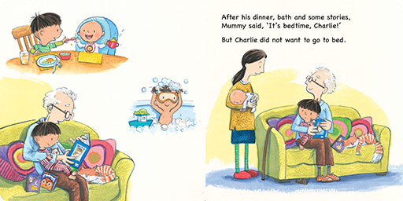
8.
What does Charlie do after coming home from the zoo?
He has dinner, takes a bath and listens to some stories.
Charlie 从动物园回家后做了什么？
吃晚饭、洗澡和听故事。
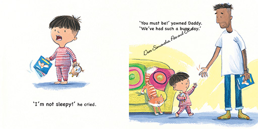
9.
Why doesn't Charlie want to go to sleep?
Charlie doesn't want to go to sleep because he is not sleepy.
Charlie 为什么不想睡觉？
因为 Charlie 一点也不困倦。
10.
How does Dad feel?
Dad feels tired / sleepy.
爸爸有什么感觉？
爸爸爸感到疲劳。
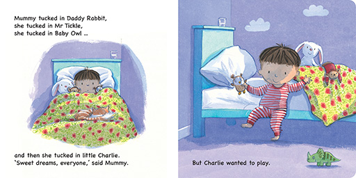
11.
What does Charlie want to do?
Charlie wants to play.
Charlie 想做什么？
Charlie 想继续玩。
12.
Do you have toys that go to bed with you?
Who are they?
你有没有和玩具一起睡觉？那是什么玩具？
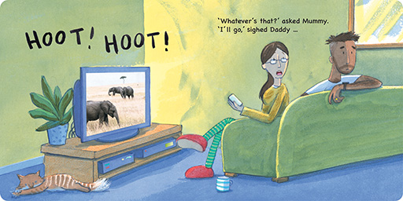
13.
What sound does Mum and Dad hear?
They hear a 'Hoot! Hoot!' sound.
爸爸妈妈听到了什么声音？
他们听到“呼呼”声。
14.
What do you think that sound is?
I think it is Charlie. / I think it is an owl.
猜猜那是什么声音。
是 Charlie 发出的声音。/ 我认为是猫头鹰。
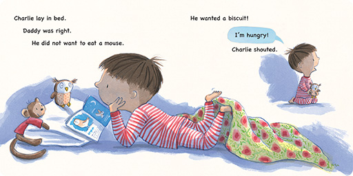
15.
How does Charlie feel?
Charlie feels hungry.
Charlie 感觉如何？
Charlie 感到肚饿。
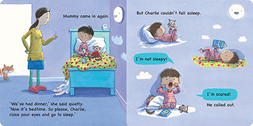
16.
What do you think Charlie is scared of?
你认为 Charlie 害怕什么？
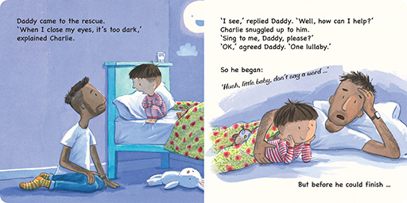
17.
What does Charlie want Dad to do?
He wants Dad to sing to him.
Charlie 想要爸爸做什么？
他想要爸爸唱歌给他听。
18.
What song do you like to listen to when you go to sleep?
你睡觉时喜欢听什么歌？
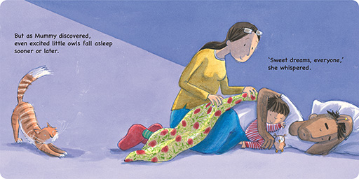
19.
Why do you think Charlie finds it so hard to fall asleep?
I think Charlie finds it hard to fall asleep because he is too excited after going to the zoo.
你认为 Charlie 很难入睡的原因是什么？
我认为 Charlie 很难入睡，因为他去动物园以后太兴奋了。
20.
Do you think Charlie falls asleep? Why?
Charlie 最后可以入睡吗？为什么？
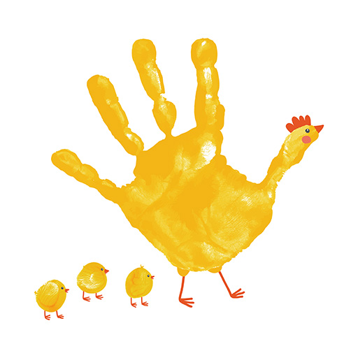
Follow-up activities
延伸活动
Create pictures of animals using hand prints and let children create a little zoo of their own. First, help children to use washable colours, and give them a paintbrush to paint one of their hands. Make sure the whole palm is covered with colours. Then, move the hand so that it resembles the shape of an animal. Next, use a marker to draw details on the handprint when the paint is dried up. Cut out the animals and make a stand at the back. You'll create a zoo full of a variety of animals!
与孩子们一起玩手印游戏，制作独一无二的动物图画，创作小小动物园。首先，孩子使用可水洗的颜料、用画笔去涂一只手掌，确保整个手掌都有颜色。然后，调整手掌的角度，把象征动物形状的手印印在画纸上。接下来，当颜料干透，用颜色笔在手印上绘画细节。完成后，把动物图样剪下来，并在后面放置一个让动物站稳的纸托。这样，便可创作出一个住了不同动物的动物园！
02 Bonzo Becomes Big
故事简介：渴望变大的Bonzo必须接受三项挑战。经过一番努力后，他终于变成大龙，并且愿望成真。
主题：成长历程、勇于尝试不同的食物、如厕训练、洗澡
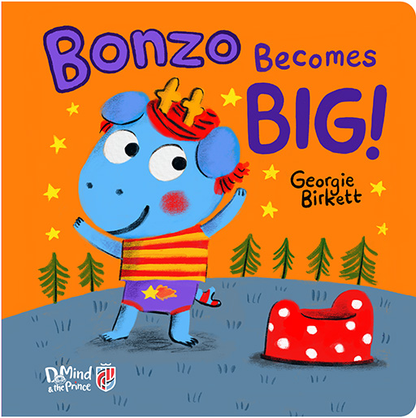
1.
What can you see in the picture?
I can see a dragon and a small potty.
你能够在图画里看到什么？
我能够看到一条龙和一个小便盆。
2.
Are you a big boy / girl?
What can you do by yourself?
你是大男孩 / 大女孩吗？你自己会做什么？
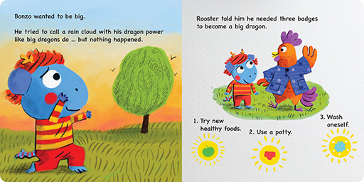
3.
Who is Bonzo's friend?
Rooster is Bonzo's friend.
谁是 Bonzo 的朋友？
公鸡是 Bonzo 的朋友。
4.
How can Bonzo get the three badges in order to become a big dragon?
He has to try new healthy food, use a potty and wash himself.
Bonzo 要怎样才可得到三个徽章，以便变成大龙？
他必须尝试吃健康食物、会用便盆、会自己洗澡。
5.
Can you do the things on the badges? Which badges can you get?
你能做徽章上的事情吗？你可以获得哪些徽章？
6.
What does Bonzo like to eat?
He likes to eat bananas.
Bonzo 喜欢吃什么？
他只喜欢吃香蕉。
7.
Do you think it is good to only eat one kind of food? What different types of food should we eat?
No, it is not good to only eat one kind of food. We should eat a variety of meat, vegetables, fruits and grains.
你认为只吃一种食物好吗？我们应该吃什么不同类型的食物？
不，只吃一种食物是不好的。 我们应该吃各种肉、蔬菜、水果和谷物。
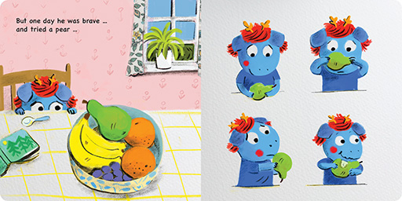
8.
How does Bonzo feel before he tries the pear?
He feels nervous.
Bonzo 尝试梨子之前心情怎样？
他感到紧张。
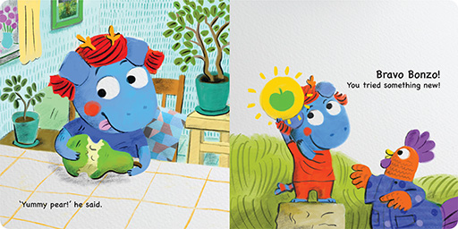
9.
Which badge does Bonzo get?
He gets the badge for 'trying new healthy food'.
Bonzo 得到哪个徽章？
他得到了“尝试新的健康食物”的徽章。
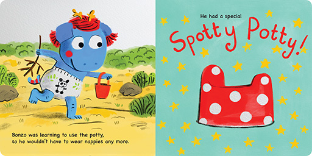
10.
What does Bonzo's potty look like?
It is red with white spots on it.
Bonzo 的便盆是什么款式？
它是红色的，上面有白色斑点。
11.
Do you use a nappy / diaper or a potty? Would you like to try using the potty like Bonzo?
你使用尿布还是便盆？你想要像 Bonzo 一样学习使用便盆吗？
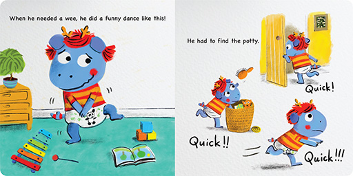
12.
Can you guess what Bonzo is doing?
He is looking for his potty.
你能猜猜 Bonzo 想做什么吗？
他想找便盆尿尿。
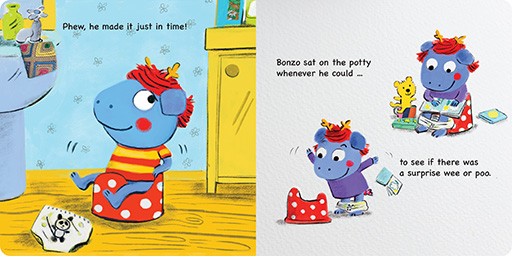
13.
What does Bonzo like to do when he sits on the potty?
He likes to read books when he sits on the potty.
Bonzo 喜欢坐在便盆上做什么？
他喜欢坐在便盆上看书。
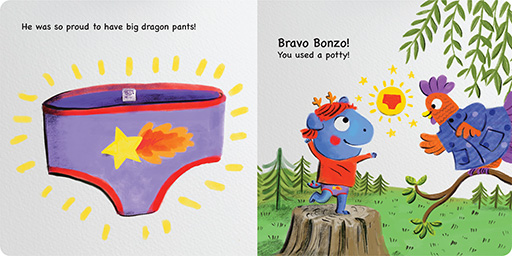
14.
Which badge does Bonzo get?
He gets the badge for 'using a potty'.
Bonzo 得到哪个徽章？
他得到“会用便盆”的徽章。
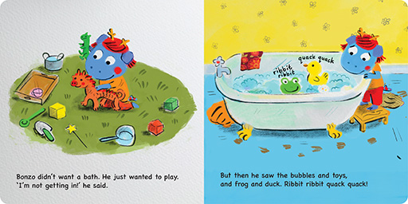
15.
Why doesn't Bonzo want to take a bath?
Because he only wants to play.
为什么 Bonzo 不想去洗澡？
因为他只想玩。
16.
What makes Bonzo change his mind about going into the bath?
He wants to play with the bubbles, toys, the frog and the duck in the bath.
什么使得 Bonzo 在洗澡这件事上改变了主意？
他想在浴缸里玩泡泡、玩具、青蛙和鸭子。
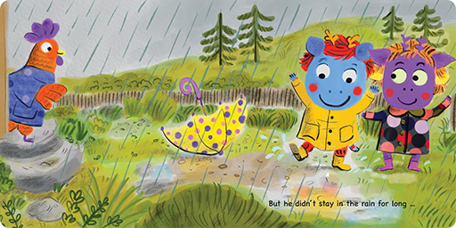
17.
How does Bonzo feel now that he can call the rain?
He feels excited / proud.
Bonzo 现在可以召唤雨水了，他的心情怎样？
他感到兴奋 / 自豪。
18.
Why doesn't Bonzo stay in the rain for long?
He doesn't stay in the rain for long because he needs to go for a wee / use the potty.
为什么 Bonzo 只在雨中玩了一会儿便离开？
因为他要去小便 / 使用便盆。
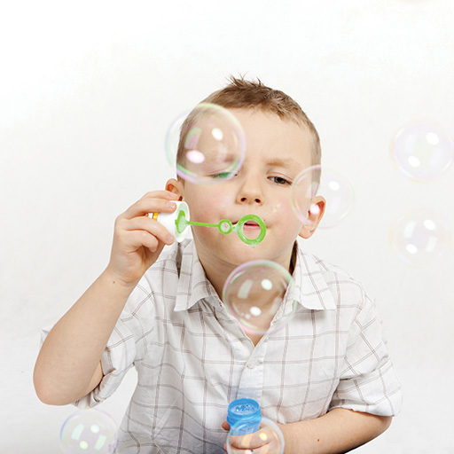
Follow-up activities
延伸活动
When children first learn to sit on the potty, most of them don't feel comfortable, nor patient, waiting for the wee or poo to come. Parents can give children a bottle of bubbles and allow them to blow some bubbles to pass the time. Blowing bubbles actually stimulates the same abdominal muscles that are used to help push when taking a poop, so if your child is unable to go due to discomfort, this method will help.
当孩子们第一次学坐便盆、等着排小便或者排大便时， 多数会感到不舒服，也没有耐性。父母可以给孩子一瓶泡泡，让他玩吹泡泡来打发时间。吹泡泡实际上可以刺激腹部肌肉，有助排便。因此，如果孩子不适而不能排便时，这个方法将会帮助他们。
03 One cup, two cups, three cups, four
故事简介：小女孩以为她和宠物鹦鹉要去参加幼儿园面试，于是，她和鹦鹉在家中努力练习面试。故事表达了幼儿面对入学面试的心情。
主题：幼儿园面试、处理压力、面对挑战
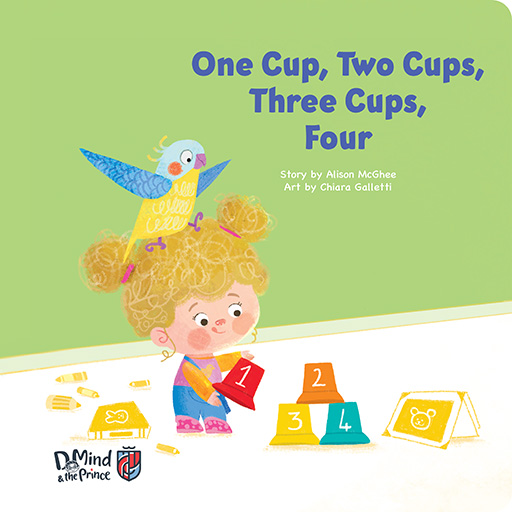
1.
What can you see in the picture?
I can see a girl stacking cups. A parrot is sitting on her head.
你可以在图画中看到什么？
我可以看到一个女孩在堆垒杯子。一只鹦鹉坐在 她的头上。
2.
Have you been to a kindergarten interview before?
你参加过幼儿园面试吗？
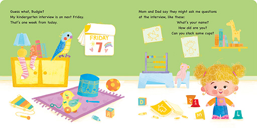
3.
What did Mom and Dad say about the interview?
Mom and Dad says she will have to answer some questions and stack cups.
爸妈说面试时会做些什么？
将必须回答一些问题，并且垒杯子。
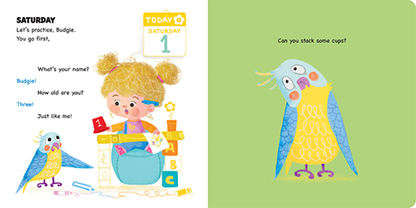
4.
Can you answer the questions like Budgie?
• What is your name?
• How old are you?
你能像 Budgie 一样回答以下的问题吗？
• 你叫什么名字？
• 你几岁了？
5.
Can you practise stacking some cups?
你可以练习垒杯子吗？
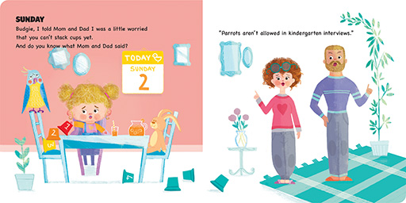
6.
Can Budgie go to the interview?
No, Budgie can't go to the interview.
Budgie 可以参加幼儿园面试吗？
不，Budgie 不可以参加幼儿园面试
7.
Who is going to the interview?
The girl.
谁才要参加幼儿园面试？
小女孩。
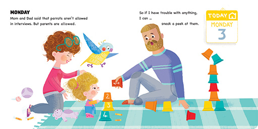
8.
Can Mom and Dad go to the interview with the girl?
Yes, they can.
爸妈可以跟女孩一起去面试吗？
是的，他们可以一起去。
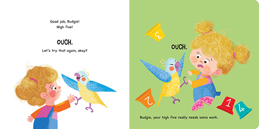
9.
What is wrong with Budgie's high fives?
Budgie hurts the girl when they high-five.
小女孩和 Budgie 击掌时，发生什么事？
在击掌时， Budgie 伤害到了小女孩。
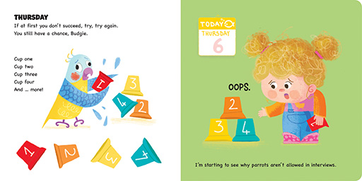
10.
What does the girl do to help Budgie stack cups?
She encourages him to try again and again.
小女孩怎样帮助 Budgie 学习垒杯子？
小女孩鼓励 Budgie 不断尝试。
11.
What can we do when we are not good at something?
We can try again and keep practicing.
当遇到我们并不擅长的事情时，我们怎样做？
我们可以再三尝试，不断练习。
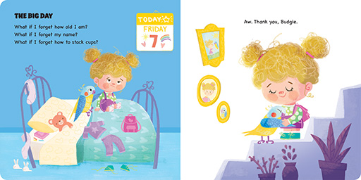
12.
The girl is going to the interview tomorrow. How does she feel?
She feels worried / anxious.
小女孩明天要参加面试，她有什么感觉？
她感到担心 / 焦虑。
13.
What does Budgie do to help the girl calm down?
Budgie gives the little girl a big warm hug.
Budgie 如何帮助小女孩冷静下来？
他给小女孩一个温暖的拥抱。
14.
What do you do if you feel nervous?
当你感到紧张时，你会怎样做？
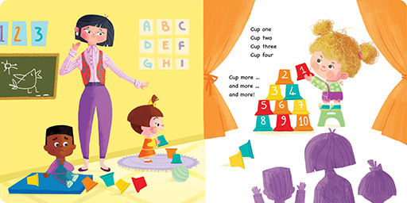
15.
Do you think the girl has done a good job at the interview? What would you say if you were the teacher?
你认为小女孩面试成功吗？如果你是老师， 你会怎样称赞小女孩？
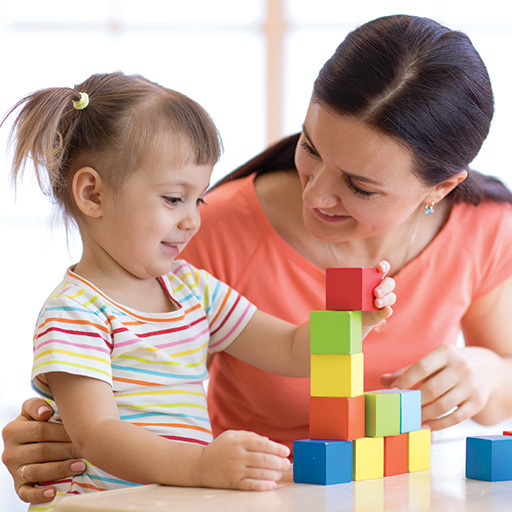
Follow-up activities
延伸活动
Kindergarten interviews can be stressful for both parents and children. If children are relaxed and familiar with the setting, it is more likely for them to perform well on the day. Before the interview day, parents should prepare children by telling them that they are going to have a 'play session' or 'play date' with some children and teachers. Let children know that they are going for some fun games instead of a scary and formal interview. Spend time with children every day playing, talking, singing and reading as a way to prepare children for the interview tasks.
父母和孩子或会为幼儿园面试而感到压力。如果孩子能够放松心情，以及熟悉面试环境，当天的表现会更理想。面试日以前，父母可以告诉孩子他将与其他小朋友和老师“玩游戏”。让孩子知道他是去玩有趣的游戏，而不是进行可怕的、正式的面试。家长也可以每天与孩子玩耍、聊天、唱歌和看书，这样轻轻松松为面试做准备。
04 The Lost Letters
故事简介：Flipo 先生正在为 Suzy 的生日派对准备一些字母，但风把字母吹走了。小朋友，快来帮忙把字母找回来！
主题：英文字母、城市设施、生日派对、观察力
1.
What can you see in the picture?
I can see an old man and three children. Some letters are flying out from the window.
你能够在图画中看到什么？
我能够看到一个老伯伯和三个孩子，还有一些字母从窗户飞出来。
2.
Do you know all the letters of the alphabet? Can we sing the ABC song together?
你认识字母表上的所有字母吗？我们可以一起唱字母歌吗？
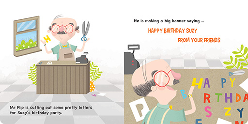
3.
What is Mr Flip doing?
He is cutting letters from colour paper.
Mr Flip 在做什么？
他用彩色纸剪出英文字母。
4.
Whose birthday is it?
It is Suzy's birthday.
谁将要过生日？
Suzy 将要过生日。
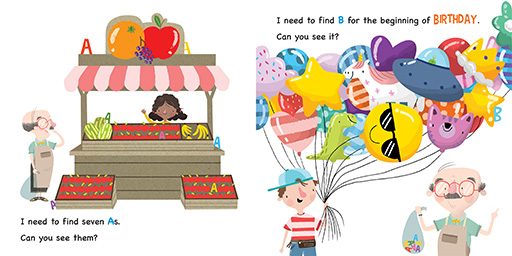
5.
Where does Mr Flip go to look for the letters A?
He goes to the fruit stall.
Mr Flip 去哪里寻找字母 A？
他去到水果摊。
6.
Where is the letter B hiding?
It is hiding behind the balloons.
字母 B 藏在哪里？
它藏在气球的后面。
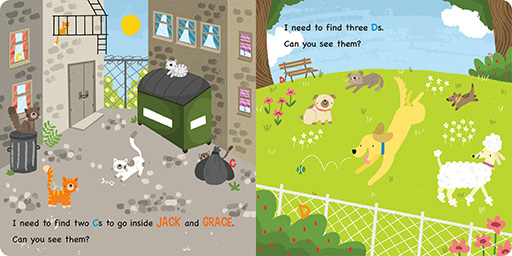
7.
How many cats and dogs are there?
There are 6 cats and 5 dogs.
图中有多少只猫和狗？
图中有 6 只猫和 5 只狗。
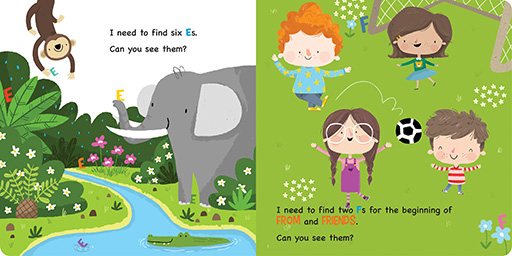
8.
What animals can you see by the river?
I can see a monkey, an elephant and a crocodile.
你可以在河边看到哪些动物？
我可以看到猴子、大象和鳄鱼。
9.
What are the children doing at the park?
They are playing football.
孩子们在公园里做什么？
他们在踢足球。
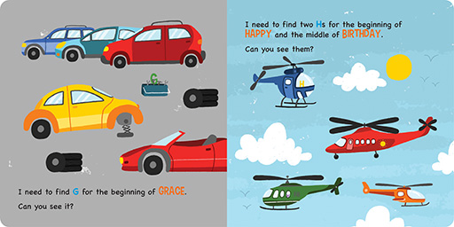
10.
How many cars and helicopters are there?
There are 5 cars and 4 helicopters.
那里有几辆汽车和直升机？
那里有 5 辆汽车和 4 架直升机。
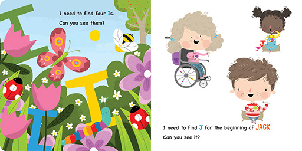
11.
What insects can you see in the garden?
I can see a butterfly, a bee, a worm and two ladybugs.
你可以在花园里能看到什么昆虫？
我可以看到一只蝴蝶、一只蜜蜂、一只毛蠕虫和两只甲虫。
12.
What are the children doing?
They are eating jellies.
孩子们在做什么？
他们在吃果冻。
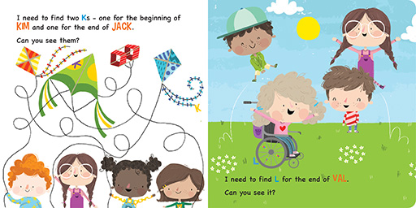
13.
Can you help the children find their kites?
你能帮助孩子们找回风筝吗？
14.
What are the children doing?
They are leaping over each other.
右图中的孩子们在做什么？
他们正在互相跳马。
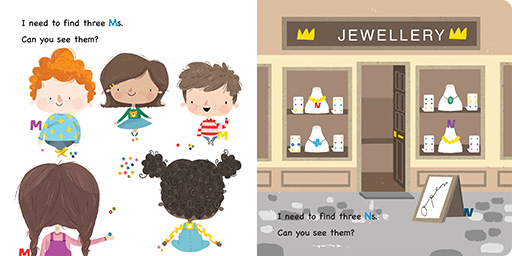
15.
What are the children doing?
They are playing with marbles.
孩子们在做什么？
他们在玩弹珠。
16.
How many necklaces can you see in the jewellery shop?
I can see 4 necklaces in the jewellery shop.
你可以在珠宝店里看到多少条项链？
我可以在珠宝店里看到 4 条项链。
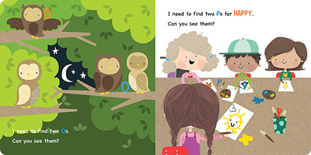
17.
How many owls are there in the tree?
There are 4 owls in the tree.
树上有几只猫头鹰？
树上有 4 只猫头鹰。
18.
What are the children doing?
They are painting pictures.
孩子们在做什么？
他们在画画。
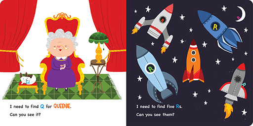
19.
What do you think the old lady is?
The old lady is a queen.
你认为那位老太太是谁？
老太太是女王。
20.
How many rockets are there?
There are 5 rockets.
那里有多少枚火箭？
那里有 5 枚火箭。
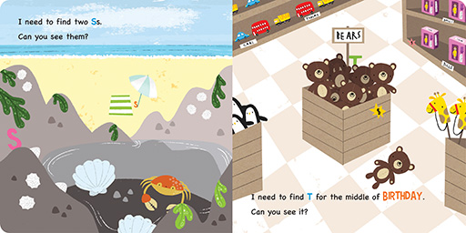
21.
What can you see at the seaside?
I can see a crab, some shells, a beach umbrella, a towel, the sand and the sea.
你在海边能看到什么？
我能看到螃蟹、一些贝壳、一把沙滩伞、 一条毛巾、沙滩和大海。
22.
What do you like to do at the beach?
你喜欢在海滩做什么？
23.
What toys do you like at the toys shop?
你喜欢玩具店里的什么玩具？
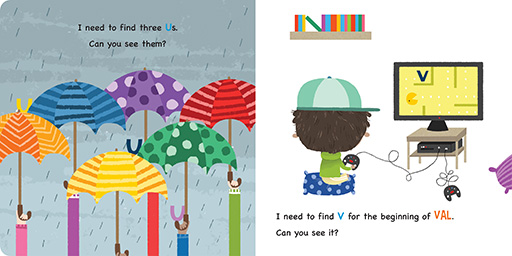
24.
How many umbrellas are there?
There are 6 umbrellas.
那里有几把伞？
那里有 6 把伞。
25.
Which is your favourite umbrella? What pattern does it have?
你最喜欢哪把伞？它有什么图案？
26.
What is the boy doing?
He is playing video games.
男孩在做什么？
他正在玩电子游戏。
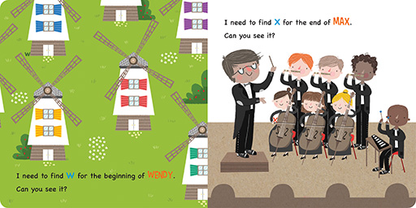
27.
What can you see on the grass?
I can see some windmills.
你能在草地上看到什么
我能看到一些风车。
28.
Which instrument starts with the letter 'x'?
Xylophone.
哪种乐器以字母“x”开头？
Xylophone 木琴。
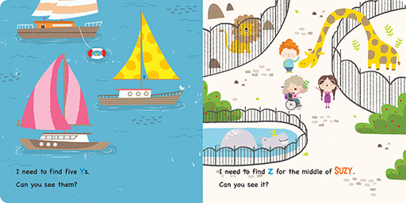
29.
What are sailing in the sea?
Some yachts are sailing in the sea.
在海上航行的是什么？
在海上航行的是一些游艇。
30.
What animals are at the zoo?
A lion, a giraffe and a hippo are at the zoo.
动物园里有哪些动物？
动物园里有狮子、长颈鹿和河马。
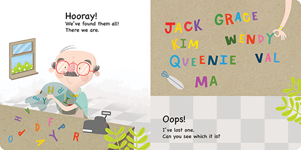
31.
How do the children feel?
They feel happy / excited.
孩子的心情怎样？
他们感到高兴 / 兴奋。
32.
Do you like birthday parties? What do you like to do at parties?
你喜欢生日派对吗？你喜欢在派对上做什么？
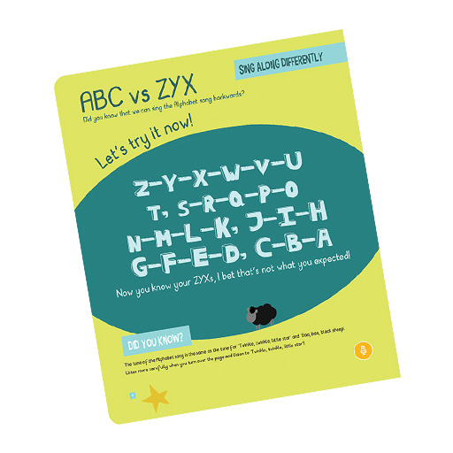
Follow-up activities
延伸活动
Most children are very familiar with the ABC alphabet song. However, can you challenge your children and ask them to sing the song backwards? Go to Sing with Me Book 1 and sing the ZYX song with your children. See how fast you can go!
大多数孩子对 ABC 字母歌曲非常熟悉。不妨挑战你的孩子，鼓励他们从 Z 开始倒转唱。翻开 Sing with Me 第一册，与孩子一起唱歌 ZYX 歌。看看你们能唱得多快！
05 Get well soon
故事简介：小动物不舒服去看医生，得到医生的细心医治，小动物很快便恢复健康了。
主题：动物及其特性、生病、看医生
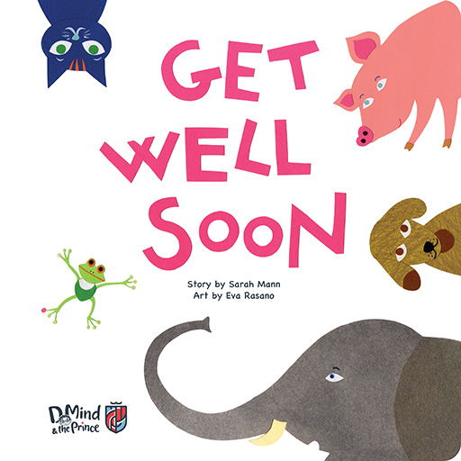
1.
What can you see in the picture?
I can see some animals. / I can see an elephant, a dog, a pig, a frog and a cat.
你可以在图画里看到什么？
我可以看到一些动物。/ 我可以看到大象、狗、猪、青蛙和猫。
2.
Do you like animals? What is your favourite animal?
你喜欢动物吗？你最喜欢什么动物？
3.
Who is this person?
She is a doctor / vet.
这个人是谁？
他是医生 / 兽医。
4.
What is wrong with Cat?
It cannot purr.
猫有什么问题？
它不能发出叫声。
5.
Can you purr like a cat?
你能像猫一样叫吗？
6.
Why can't Cat purr?
Cat can't purr because its throat is full of fur.
为什么猫不能发出叫声？
猫不能发出叫声，因为它的喉咙塞满毛发。
7.
How will Dr Doctor help Cat?
She will take out the fur from Cat's throat.
医生将如何帮助猫？
她将从猫的喉咙中取出毛发。
8.
What is wrong with Dog?
It cannot bark.
狗有什么问题？
它不能吠叫。
9.
Can you bark like a dog?
你能像狗一样叫吗？
10.
Why can't Dog bark?
Dog can't bark because it yelled too much at the park.
为什么狗不能吠叫？
狗不能吠叫，因为它在公园吠叫得太多了。
11.
How will Dr Doctor help Dog?
She will give Dog some medicine.
医生将如何帮助狗？
她将给狗一些药。
12.
What is wrong with Frog?
It cannot jump.
青蛙有什么问题？
它不能跳。
13.
Can you jump like a frog?
你能像青蛙一样跳吗？
14.
Why can't Frog jump?
Frog can't jump because it has a lump on its foot.
为什么青蛙不能跳？
青蛙不能跳，因为它的一只脚上有硬块。
15.
How will Dr Doctor help Frog?
She will put some cream on the lump.
医生将如何帮助青蛙？
她将把一些药膏涂在硬块上。
16.
What is wrong with Bird?
It cannot fly.
鸟有什么问题？
它不能飞。
17.
Can you fly like a bird?
你能像鸟一样飞吗？
18.
Why can't Bird fly?
Bird can't fly because it cannot see properly.
为什么鸟不能飞？
鸟不能飞，因为它看不见。
19.
How will Dr Doctor help Bird?
She will put some eye drops in Bird's eye.
医生将如何帮助鸟？
她将在鸟的眼中滴一些眼药水。
20.
What is wrong with Fish?
It cannot swim.
鱼有什么问题？
它不能游泳。
21.
Can you swim like a fish?
你能像鱼一样游泳吗？
22.
Why can't Fish swim?
Fish can't swim because it has broken its fin.
为什么鱼不能游泳？
鱼不能游泳，因为它的鱼鳍受伤了。
23.
How will Dr Doctor help Fish?
She will put a bandaid / plaster on Fish.
医生将如何帮助鱼？
她将把胶布 / 膏药贴在鱼鳍上。
24.
What is wrong with Lion?
It cannot roar.
狮子有什么问题？
它不能咆哮。
25.
Can you roar like a lion?
你能像狮子一样咆哮吗？
26.
Why can't Lion roar?
Lion can't roar because it has a sore throat.
为什么狮子不能咆哮？
狮子不能咆哮，因为它的喉咙疼痛。
27.
How will Dr Doctor help Lion?
She will give Lion some pills / throat drops.
医生如何帮助狮子？
她会给狮子一些药丸 / 润喉糖。
28.
How do the animals feel after Dr Doctor helped them with their problems?
They feel happy / well again.
得到医生帮助解决问题以后，动物们有什么感觉？
他们再次感到快乐 / 感觉舒服。
Follow-up activities
延伸活动
Some children get worried whenever they have to visit the doctor. Role-play doctor and patient at home with children and go through the procedures of a doctor's visit. Explain to children what will be done and how they will feel so that they don't feel scared or surprised. Swap roles from time to time so children have chances to be both doctor and patient. When children are exposed to the procedure more often, it is less likely for them to feel scared when they see the doctor next time.
有些孩子每次去看医生都会感到害怕。可与他在家中玩扮演医生和病人的游戏，模拟医生看病的步骤。向孩子讲解看医生的过程，以及他们将有什么感觉，以便他们不感到害怕或者吃惊。不时互换角色，让孩子有机会扮演医生和病人，当他们更加经常地接触看医生的程序后，下次去看医生时或可减轻不安的情绪。
06 Counting with Grandma
故事简介：Henry 非常想念在外地的父亲，于是祖母想到了一个方法，帮助 Henry 打发时间。
主題：家庭、数数、日期、种植及园艺
1.
What can you see in the picture?
I can see a woman and a boy. They are reading and writing about numbers.
你能够在图画里看到什么？
我能够看到一个女人和一个男孩。他们正在阅读和写数字。
2.
Can you count from 1 to 20? What number can you count up to?
你可以从 1 数到 20 吗？你最多可以数到多少？
3.
What is Henry waiting for?
He is waiting for Dad to come home.
Henry 在等待谁回家？
他在等待爸爸回家。
4.
When will Dad be back?
Dad will be back on the 7th of June / in 7 days.
爸爸何时会回家？
爸爸会在 6 月 7 日 / 7 天后回家。
5.
Can you count the birds in the picture?
你能够数出右图中有多少只鸟儿吗？
10 只鸟。
6.
How many birds are there in Henry's backpack?
There are 6 birds in his backpack.
Henry 的双肩背包里有几只鸟？
他的双肩背包里有 6 只鸟。
7.
How many birds are flying outside the window?
There are 4 birds flying outside the window.
窗外有几只鸟在飞？
窗外有 4 只鸟在飞。
8.
Where are Henry and Grandma?
They are at the park.
Henry 和祖母在哪里？
他们在公园里。
9.
What does Henry bring home to make presents?
He brings home 5 smooth stones.
Henry 带了什么回家制作礼物？
他带了 5 块光滑的石头。
10.
What do you think Henry is going to make?
你认为 Henry 会用石头做什么？
11.
What is Henry doing?
He is painting the stones with beautiful colours.
Henry 正在做什么？
他正在石头上涂上美丽的颜色。
12.
Which store do Henry and Grandma go to?
They go to a stationery store.
Henry 和祖母去哪一家商店？
他们去了文具店。
13.
What do you think Henry wants to buy?
你认为 Henry 想买什么？
14.
What does Henry make with the paper he bought?
He makes 4 flowers and a garden.
Henry 用买来的纸张做什么？
他做了 4 朵花和一个花园。
15.
How many butterflies does Henry make for the garden?
He makes 2 butterflies for the garden.
Henry 为花园做了几只蝴蝶？
他为花园做了 2 只蝴蝶。
16.
How many things are there altogether in the garden?
There are 21 things altogether in the garden.
花园里总共有多少件对象？
花园里共有 21 件物件。
17.
How does Henry feel when he sees Dad?
Henry feels excited / happy when he sees Dad.
Henry 见到爸爸时心情怎样？
Henry 见到爸爸时感到兴奋 / 高兴。
18.
What other things do you think Henry will give Dad?
你认为 Henry 还会给爸爸什么呢？
Follow-up activities
延伸活动
Make little birds like Henry using a paper plate and coloured feathers. First, fold the paper plate into half. Get children to decorate the body of the bird with crayons or colour pencils. Stick googly eyes and a small triangle as the beak of the bird. Lastly, stick colourful feathers on the bird as the wings and the tail. Watch the bird 'fly' back and forth as the paper plate rocks on the table.
可使用纸碟和彩色羽毛制作像 Henry 所做的小鸟。首先，将纸碟对折作为鸟身，然后让孩子们用蜡笔或颜色笔在上面涂色。贴上两只眼睛和一个作为鸟嘴的小三角形。最后，将五颜六色的羽毛贴在鸟身上作为翅膀和尾巴。孩子可以把纸碟鸟放在桌子上摇晃，来观察鸟在前前后后地“飞”。
01 Animal band
故事简介：在河边小睡的大熊被动物乐队吵得无法入睡，他想到一个妙计，河边终于恢复宁静，他大可以安心地睡觉去。
主题：拟声词、森林动物、接受别人、多角度思考、解决问题
1.
What can you see in the picture?
I can see a big bear.
你能够在图画中看到什么？
我能够看到一只大熊。
2.
Where is the bear?
It is in the forest.
熊在哪里？
熊在森林里。
3.
What is Bear doing?
It is sleeping by the river.
熊在做什么？
他在河边睡觉。
4.
Who can we see coming?
We can see Rabbit and Mole coming.
我们能够看到谁来了？
我们能够看到兔子和鼹鼠来了。
5.
What good news do Rabbit and Mole bring?
They are starting a band.
兔子和鼹鼠带来了什么好消息？
他们正在开始组建一支乐队。
6.
What sound is Rabbit making? How is he making it?
Rabbit is making a 'thump' sound by thumping his feet.
兔子发出什么声音？他如何发出声音？
他用脚踏地，发出“嘭”的声音。
7.
What sound is Mole making? How is he making it?
Mole is making a 'tap' sound by tapping a tree stump with a stick.
鼹鼠发出什么声音？他如何发出声音？
他用棍子轻敲树桩，发出“啪”的声音。
8.
Can you make the some sounds as Rabbit and Mole?
你可以跟兔子和鼹鼠一样做出这些声音吗？
9.
What sound is Squirrel making? How is he making it?
He is making a 'plop' sound by dropping nuts into the river.
松鼠发出什么声音？他如何发出声音？
他把坚果扔进河里，发出“扑通”的声音。
10.
How does Bear feel? Is he happy about the sounds?
He is a bit annoyed. He isn't too happy about the sounds.
熊的感觉怎样？他喜欢这些声音吗？
他有点生气，他不太喜欢这些声音。
11.
What sound is Badger making? How is he making it?
He is making a 'rustle' sound by waving two saplings.
獾发出什么声音？他如何发出声音？
他挥舞着两株小树苗，发出“沙沙”的声音。
12.
What is Bear trying to do?
He is trying to sleep.
熊想试图什么？
他试图去睡觉。
13.
Do you think he can sleep? Why?
No, I don't think he can sleep because the animals are too noisy.
你认为他可以睡觉吗？为什么？
不，我不认为他能入睡，因为动物乐队太吵了。
14.
How can Hedgehog and Frog make sounds?
Hedgehog can knock stones together and Frog can croak.
刺猬和青蛙可以如何发出声音？
刺猬可以把石头碰撞在一起，而青蛙则可以呱呱地叫。
15.
What sounds do Hedgehog and Frog make?
Hedgehog makes the 'chink' sound and Frog makes the 'ribbit' sound.
刺猬和青蛙发出什么声音？
刺猬发出“咯咯”声，青蛙发出“呱呱”声。
16.
Does Bear like the sounds?
No, he doesn't like the sounds.
熊喜欢这些声音吗？
不，他不喜欢这些声音。
17.
How does Bear feel? Why do you think he feels this way?
He is angry / mad because he is trying to sleep.
熊有什么感觉？你认为他为什么有这种感觉？
熊很生气 / 气愤，因为他正试图去入睡。
18.
What does Bear suggest?
He wants to join the band.
熊有什么提议？
他想加入动物乐队。
19.
What sound is Bear making? How is he making it?
He is making a 'scritchy-scritchy scratch' sound by scraping his claws on a tree trunk.
熊发出什么声音？他是如何发出声音的？
他用爪子刮树干，发出“沙沙”的声音。
20.
Do the animals like the sound Bear is making?
No, they don't like the sound Bear is making.
动物喜欢熊发出的声音吗？
不，他们不喜欢熊发出的声音。
21.
What is Bear trying to do?
He is trying to scare the animals away.
熊正在试图做什么？
他正在试图把动物吓跑。
Follow-up activities
延伸活动
Encourage children to explore and make sounds using different things at home. Children can start by using their body to make sounds such as clapping their hands, stomping their feet or snapping their fingers. Explore with children how they can make a simple instrument using only rubber bands of different widths and a box.
鼓励孩子在家里用不同物件探索和弄出不同的声音。 孩子一开始可以使用自己身体去发出声音，如拍手、 踏脚或弹手指。与孩子尝试使用不同宽度的橡皮筋和 盒子来制作简单的乐器。
02 Rainy days
故事简介：Donut 不喜欢下雨天，但当妈妈解释下雨有多重要后，他开始喜欢下雨。
主題：水的循环、雨水的重要性、天气、正向思维
1.
What can you see in the picture?
I can see Donut wearing a raincoat playing in the rain. The sun is out and there is a rainbow.
你能够在图画中看到什么？
我能够看到 Donut 穿着雨衣在雨中玩耍。 太阳出来了，天空中有一道彩虹。
2.
What is your favourite weather? Why?
你最喜欢的天气是什么？为什么？
3.
What is the weather like?
It is a sunny day.
今天天气如何？
今天是晴天。
4.
What is Donut doing?
He is playing on the swing.
Donut 在做什么？
他在荡秋千。
5.
What is the weather like now?
It is a rainy day.
现在的天气如何？
现在是雨天。
6.
Does Donut like rainy days?
No, he doesn't like rainy days. He can't play outside.
Donut 喜欢下雨天吗？
不，他不喜欢下雨天。因为他不可以在户外玩耍。
7.
What are clouds made of?
Heat from the sun turns water from the sea into water vapour. When the water vapour turns into water droplets and float in the air, they form clouds.
云是由什么组成的？
海水受热化成水蒸汽。当水蒸汽变成水滴并且在 空气中漂浮时，它们就形成云。
8.
How is rain formed?
When the water droplets get too large and heavy, they fall as rain.
雨水怎样形成？
当水滴越来越大，越来越重，它们下落就形成雨水。
9.
Is rain important? Why?
Yes, rain is important because it gives us water to drink.
雨水重要吗？为什么？
是的，雨水很重要，因为它可以给我们提供饮用的水。
10.
Can you think of other uses for water?
你能够想到水还有什么用途吗？
11.
What do we see after raining when the sun comes out?
We can see a rainbow.
下雨后太阳出来时，我们能看到什么？
我们能看到彩虹。
12.
Do you like jumping into the puddles?
你喜欢跳进水坑里玩吗？
13.
What does the blue colour on Donut represent?
It represents the water in his body.
图中 Donut 身上的蓝色部分代表什么意思？
它表示他身体里的水。
14.
Can Donut play in the rain?
Yes, he can play and jump into the puddles.
Donut 可以在雨中玩吗？
是的，他可以玩耍并且跳进水坑。
15.
How do you think Donut feels about rain now?
你认为 Donut 现在对下雨有什么感觉？
16.
Do you like rain? Why?
你喜欢下雨吗？为什么？
Follow-up activities
延伸活动
Do a simple and fun experiment and teach children about rain and clouds. Ask children to pour water into a glass, leaving about an inch from the rim. Carefully add a layer of shaving cream to the water and tell children that it represents the clouds. Add a few drops of blue food colouring or water colour to the shaving cream. Let children observe as the colour pushes through the shaving cream and falls down like rain.
来跟孩子玩一个简单而有趣的游戏，并且教育孩子关于雨和云的知识。请孩子将水倒入一个玻璃杯中，水位及杯边预留大约一吋距离。然后仔细地在水面中添加一层剃须膏，并且告诉孩子它代表云。在剃须膏中加入几滴蓝色食用色素或水彩颜料。让孩子观察颜色穿过剃须膏，会像雨一样掉下来。
03 Day and Night
故事简介：Miki 和家人第一次去露营。旅途中，她观察到郊外的灯光和色彩与城市的有很大区别。
主题：享受郊外生活、欣赏及爱惜地球、光与影、光污染
1.
What can you see in the picture?
I can see the sun, the moon and a girl holding a rabbit.
你能够在图画里看到什么？
我能够看到太阳、月亮和抱着兔玩具的女孩。
2.
Have you tried camping before? Would you like to sleep in the tent outdoors?
你以前试过露营吗？你想在户外帐篷里睡觉吗？
3.
How does Miki feel about going camping?
She feels happy / excited.
Miki 对于去露营有什么感觉？
她感到高兴 / 兴奋。
4.
What are the roads like in the city?
The roads are honky, smoky and busy.
城市的道路是怎样的？
城市的道路烟雾弥漫、很繁忙。
5.
How does the colour of the scenery change as they drive away from the city?
It changes from grey to green.
他们驾车离开城市后，风景的色彩有什么变化？
色彩从灰色变为满色。
6.
What are Dad and Mum doing?
Dad is collecting some wood. Mum is setting up the lights.
爸爸和妈妈在做什么？
爸爸正在收集木材。妈妈正在安装灯泡。
7.
What does Miki like about the forest?
She likes the smell of trees and grass.
Miki 喜欢森林的什么？
她喜欢树和草所散发的气味。
8.
What does Miki do in the afternoon?
She chases the shadows under the trees.
Miki 在下午做什么？
她在树下的树荫里追逐。
9.
What do Miki and her family do at night?
They eat dinner by the campfire.
Miki 和家人晚上做什么？
他们在篝火旁吃晚餐。
10.
What does Miki see in the sky?
She sees the dark sky full of stars and the moon.
Miki 在天空中看到了什么？
她看到黑暗的天空挂着星星和月亮。
11.
How is night at the countryside different from that of the city?
There are no city lights and noises from the street.
郊外的夜晚与城市的夜晚有什么不同？
郊外的夜晚没有城市的灯光和街道上的噪音。
12.
Do you think Miki likes the sky of the countryside or the city better?
你认为 Miki 喜欢郊外的天空、还是城市的天空？
Follow-up activities
延伸活动
Not a lot of children have experienced camping. Let children enjoy the fun of sleeping in a tent by building a fort using dining chairs and bed sheets. First, make two rows of chairs with the backs facing each other. Put blankets and pillows on the floor to make the fort comfortable. Next, drape a big bed sheet over the back of the chairs. Add lights to the fort so children can play or read in there.
并没有许多孩子曾经去露营。爸妈可用餐椅和床单搭建一个营地，让孩子享受在帐篷里睡觉的乐趣。首先，将椅子背对背排成两行。再用一张大床单放在所有的椅背上，这样便形为一个帐篷，将毯子和枕头放在地面，令帐篷更舒适。再添几盏灯，以便孩子可以在里面玩耍或者看书。
04 Olivia's cooking show
故事简介：Olivia 示范做比萨饼，而 Donut 则帮助她拍摄烹饪节目。完成后，大家一起分享美味的比萨饼和有趣的影片。
主题：烹饪、食谱、科技及电子用品、视频拍摄及分享
1.
What can you see in the picture?
I can see a girl, some food and some cooking utensils.
你能够在图画中看到什么？
我能够看到一个女孩、一些食物和烹调用具。
2.
Have you tried cooking before? Who did you cook with? What did you make?
你以前尝试过做饭吗？你和谁一起做饭？你做的是什么？
3.
Who is the little girl?
She is Olivia.
小女孩是谁？
她是 Olivia。
4.
What is Olivia doing?
She is shooting a cooking show.
Olivia 在做什么？
她正在拍摄烹饪节目。
5.
Who helps her record the video?
Donut.
谁帮助她拍摄视频？
是 Donut。
6.
What is Olivia going to make?
She is going to make a pizza.
Olivia 准备制作什么食物？
她准备制作比萨饼。
7.
What toppings does Olivia's pizza have?
It has pizza sauce, pepperoni and cheese.
Olivia 的比萨饼有哪些配料？
有比萨酱、意大利辣香肠和芝士。
8.
What do you like on your pizza?
你喜欢比萨饼上有什么配料？
9.
What is Olivia mixing in the picture?
Sugar and water.
图画中的 Olivia 在搅拌什么材料？
糖和水。
10.
What does Olivia add next?
Yeast.
接下来 Olivia 放了什么材料？
酵母粉。
11.
What is Olivia asking for? How much does she add?
4 cups of flour.
Olivia 要什么？她要加多少分量？
4 杯面粉。
12.
What does Olivia ask Mum to do?
Olivia asks Mum to help roll out the pizza dough.
Olivia 请妈妈帮忙做什么？
Olivia 请妈妈帮忙推平比萨饼面团。
13.
Why does Olivia ask Dad to put the pizza into the oven?
It is because the oven is very hot and dangerous.
为什么 Olivia 请爸爸把比萨饼放进烤箱？
因为烤箱非常热而且危险。
14.
Do you think Olivia's pizza will be tasty?
你认为 Olivia 的比萨饼会很好吃吗？
15.
What are the adults doing after the cooking show?
They are cleaning up.
烹饪节目结束后，成年人在做什么？
他们在搞清洁。
16.
What is Donut doing? Why?
He is uploading the video.
Donut 在做什么？为什么？
他正在上载视频。
17.
Do you think Olivia could have made the pizza by herself? Whom does she have to thank?
你认为如果只有 Olivia 一人，她可以制作 比萨饼吗？她必须要感谢谁？
Follow-up activities
延伸活动
Make a simple dish with your children and enjoy the fun of cooking. First, watch a cooking video with children and go over the steps one by one. Ask children to prepare and help measure the ingredients, which is an excellent activity to learn about the simple maths concepts of weight and counting. Allow children to help with adding, mixing and stirring and leave the cooking part to the adults. Let children enjoy the food they have cooked by themselves and ask them to share how they think it tastes. When children are more confident with cooking, parents can shoot a short video of them cooking while describing the steps to practice presenting.
与孩子一起做一道简单的菜，享受烹饪的乐趣。首先， 与孩子一起观看烹饪影片，并逐一讲解步骤。请孩子准备材料并帮助称出分量，这是学习重量和计算等简单数学概念的好活动！允许孩子帮助加入材料，混合和搅拌，但烹调部分留给成人。让孩子们品尝他们自己烹制的食物，并且请他们分享食物的味道。当孩子对烹饪有更大的信心时，父母可以拍摄孩子烹饪的短视频，同时由孩子说明烹饪步骤，以便练习演讲。
05 I wasn't invited!
故事简介：当 Ellie 知道自己没有在爸妈的婚礼上出现，她感到非常失望，但与此同时，妈妈告诉她一个好消息－她将会成为大姐姐！
主题：婚礼、怀孕、兄弟姊妹、解决问题、情绪意识
1.
What can you see in the picture?
I can see a little girl standing by a door.
你可以在图画中看到什么？
我可以看到一个小女孩站在门外。
2.
Do you have siblings? Do you love your siblings?
你有兄弟姐妹吗？你喜欢他们吗？
3.
Who invites Ellie to the wedding?
Ellie's uncle, Harvey.
谁邀请 Ellie 参加婚礼？
Ellie 的叔叔 Harvey。
4.
What is a wedding?
A wedding is a party for two people getting married.
什么是婚礼？
婚礼是两个人结婚的派对。
5.
Have you been to a wedding before?
你以前参加过婚礼吗？
6.
What does Mum show Ellie?
Mum shows Ellie her wedding album.
妈妈给 Ellie 看什么？
妈妈给 Ellie 看她的结婚相册。
7.
Which person is the flower girl in the picture?
The girl who is standing next to the bride / Mum.
图中谁是花童？
新娘 / 妈妈旁边的小女孩便是花童。
8.
What is Ellie looking for?
She is looking for pictures of herself.
Ellie 在寻找什么？
她在寻找自己的照片。
9.
How does Ellie feel when she learns that she was not at the wedding?
She feels upset / shocked.
当 Ellie 得知自己不在婚礼上时，她有什么感觉？
她感到伤心 / 震惊。
10.
Why wasn't Ellie at Mum's wedding?
It was because she wasn't born yet.
为什么 Ellie 没有参加妈妈的婚礼？
因为那时她还未出生。
11.
Who is the baby Mum and Dad are holding?
Ellie.
爸妈抱着的婴孩是谁？
是 Ellie。
12.
Why is Mum's tummy big now?
It is because Mum has a baby inside her tummy.
为什么现在妈妈的肚子这么大？
因为妈妈的肚子里有一个婴儿。
13.
How does Ellie feel when she finds out that she will be a big sister?
She feels excited.
Ellie 知道自己将成为大姐姐有什么感觉？
她感到很兴奋。
Follow-up activities
延伸活动
Teach children about pregnancy and child birth by showing pictures or videos when you were pregnant and when children were newly born. Often children find it hard to understand things that they cannot see or visualize. Showing them pictures of your pregnancy and when they were little can help them understand how much they have grown, and helps to prepare children welcome their upcoming siblings.
父母可以通过妈妈怀孕和孩子刚出生时的图片或视频， 来教导孩子有关怀孕和生育的知识。孩子通常很难理解不能看见或者进行形象化的事物。向他们展示怀孕照片以及他们小时候的照片，可以帮助他们了解自己的成长，及作好准备迎接即将来临的弟妹。
06 Bouncer
故事简介：Jennie 一家为大狗 Bouncer 将要老去离开而感到难过，一家人要为曾带给他们快乐的这只狗作好准备。
主题：生命教育、生命及死亡、饲养宠物的责任、正向思维
1.
What can you see in the picture?
I can see a family and a dog.
你能够在图画中看到什么？
我能够看到一家人和一只狗。
2.
Do you have a pet? What is your pet and what is its name?
你有宠物吗？你的宠物是什么？它的名字是什么？
3.
Do you love your pet? What do you do to help take care of your pet?
你爱你的宠物吗？你如何照顾它？
4.
What is the little girl doing? Why?
She is looking for Bouncer. She wants to play with Bouncer.
小女孩在做什么？为什么？
她正在寻找 Bouncer，她想同 Bouncer 玩皮球。
5.
Why does the little girl's brother ask her to let Bouncer rest?
It is because Bouncer is old.
为什么小女孩的哥哥叫她让 Bouncer 休息嗎？
因为 Bouncer 已经很老了。
6.
Can you guess how old is bouncer?
你能猜猜 Bouncer 有几岁了吗？
7.
What's wrong with Bouncer?
The vet said Bouncer will die soon.
Bouncer 怎么了？
兽医说 Bouncer 很快就会死。
8.
How does the brother feel?
The brother feels sad.
哥哥的心情怎样？
哥哥感到很难过。
9.
How does the little girl feel when she knows Bouncer will sleep forever? What does she do?
She feels very upset and she starts to cry.
当小女孩知道 Bouncer 将永远地睡去时，她的心情怎样？她在做什么？
她感到很伤心，并开始哭起来。
10.
What does Dad suggest they do at Bouncer's funeral?
Dad suggests everyone should talk about the fun things Bouncer did.
爸爸建议他们在 Bouncer 的葬礼上做什么？
爸爸建议每个人都应当谈谈 Bouncer 曾经做过的趣事。
11.
What did Bouncer do in the little girl's story?
He went outside after the bath and rolled around in the mud.
在小女孩的故事里， Bouncer 曾经做过什么？
Bouncer 在洗澡以后立刻走到外面，在泥泞中打滚。
12.
How do the family take care of Bouncer? Do you think taking care of a pet is hard work?
这家人怎样照顾 Bouncer？你认为照顾宠物很 困难吗？
13.
Do you do any of these things to look after your pet?
为了照顾你的宠物，你做过上述任何一项吗？
14.
What do Mum and Dad bring for their children?
They bring them a new dog.
爸爸和妈妈给孩子们带来了什么？
爸爸和妈妈带来了一只新的小狗。
15.
How would you feel if your pet died? What could we do to make us feel better?
如果你的宠物死了，你会有什么感觉？我们该怎么做才能使我们感觉好些？
Follow-up activities
延伸活动
Death is not an easy topic to discuss with children. However, when the time comes that parents have to explain the situation to their children, they should try to be straightforward and honest with them. When talking to young children, parents can explain to them that the family pet is no longer with you and will not be coming back. Apart from the things mentioned in the story, parents can also ask children to paint a picture of the pet in honour of it. Children can draw a picture of the pet, the good times they had together, or anything that comes to mind to help them express their emotions.
与孩子讨论死亡不是一个轻松的话题。然而，当父母必须向孩子解释这种局面时，父母应该尽量直接和如实告诉孩子。当与小孩子讨论时，父母可以告诉他们，宠物不再与我们在一起了，也不会再回来了。除了这篇故事中提到的事项，家长也可以请孩子画一张宠物的图画，以示纪念。孩子可以画一张宠物的图画，与它在一起的美好时光， 或者他想起来的事情，以帮助孩子表达情感。
07 Giving
故事简介：Max 不舍得把不合身的球衣转送别人，但后来发觉把东西赠予别人，自己也能从中获益！
主题：帮助别人、捐赠、分享、慈善工作
1.
What can you see in the picture?
I can see a boy, a box, some toys and clothes.
你能够在图画中看到什么？
我能够看到一个男孩、一个盒子、一些玩具和衣服。
2.
Do you give away things you don't use or like anymore?
你会不会把不再使用或者不再喜欢的东西捐赠 给别人吗？
3.
What small animals can you see in Max's garden?
I can see a bird, some bees and butterflies.
你可以在 Max 的花园中看到哪些小动物？
我可以看到一只鸟、一些蜜蜂和蝴蝶。
4.
Which season does Max like the most?
Spring.
Max 最喜欢哪个季节？
春天。
5.
What does Max like to do in the spring?
He likes playing football in the spring.
他喜欢在春天做什么？
他喜欢在春天踢足球。
6.
What is your favourite season?
你喜欢哪个季节？
7.
What can you do in different seasons?
你在不同的季节里，你能够做什么活动？
8.
What does Max have to get in order to play football?
He has to get his favourite football, cap and football shirt.
为了去踢足球，Max 必须带上什么？
他必须带上喜爱的足球、帽子和球衣。
9.
Why does Max look sad?
Max looks sad because he can't find his football shirt.
为什么 Max 看起来很难过？
看起来很难过是因为他不能找到自己的球衣。
10.
What is Mei doing?
Mei is drawing pictures.
Mei 在做什么？
Mei 在画画。
11.
What is Mei going to do?
Mei is going to help Max look for his football shirt.
Mei 将要做什么？
Mei 要帮助 Max 寻找他的球衣。
12.
Do you help your siblings when they ask for help? Why?
当你的兄弟姐妹向你寻求帮助时，你会帮助 他们吗？为什么？
13.
What is a charity?
A charity helps people.
什么是慈善机构？
慈善机构帮助别人。
14.
Do you think Max's football shirt is in the box?
你认为 Max 的球衣在箱子里吗？
15.
What was there inside the box?
There were old clothes and toys inside the box.
箱子里面有什么？
箱子里有旧衣服和玩具。
16.
Was the football shirt inside the box?
Yes, it was.
球衣在箱子里吗？
是的，它在里面。
17.
How does Max feel about finding his football shirt?
He feels happy / excited.
Max 发现自己的球衣时感觉如何？
他感到高兴 / 兴奋。
18.
What is the use of having old clothes and toys in the box?
They can be given to people who need them.
把旧衣服和玩具放在箱子里有什么用途？
可以将它们送给有需要的人。
19.
Have you given your things away to charity before?
你以前曾经把自己的东西捐给慈善机构吗？
20.
What would you give away to charity?
你会把什么捐给慈善机构？
21.
Does Max want to give away his football shirt? Why?
No, Max doesn't want to give away his football shirt because he loves it very much.
Max 想捐出自己的球衣吗？为什么？
不，Max 不想捐出他的球衣，因为他非常喜欢 这件球衣。
22.
Why should we give old things away?
It is because we may not need them anymore. They can be used by someone who need them.
我们为什么要把旧东西捐出？
因为我们可能不再需要它们。它们可以由需要它们的人进行使用。
23.
Where are Max and his family going? What are the people there doing?
They are going to the park. People are giving away some old things and some people are looking for things that are useful to them.
Max 一家要去什么地方？人们在那里做什么？
Max 一家要去公园里。人们正在捐出旧物品， 另外一些人在找寻对他们有用的物品。
24.
Do you think it is good to exchange old things? Why?
大家交换旧物品的做法好吗？为什么？
25.
What is the girl doing?
She is kicking a pine cone like a football.
女孩在做什么？
她像踢足球一样地踢松果。
26.
Do you think the girl is happy?
你认为小女孩开心吗？
27.
What does Max realize?
He realizes that we don't need a football or a football shirt to have fun.
Max 意识到了什么？
他意识到，我们获得快乐并不需要足球或者球衣。
28.
What does Max gain after he gives away his football shirt?
He gains a new friendship.
Max 送出球衣后得到了什么？
他获得了一份新的友谊。
Follow-up activities
延伸活动
We can teach children to be generous by asking them to share what they have with others. Explain to them that some children are less lucky and may not have toys to play with. Help them to understand how they could make other children happy by sharing. Then look through their toy box and wardrobe with them and find something they don't like or don't use anymore. Praise them for being kind and nice and send the things to charity organizations together with them.
通过鼓励孩子与人分享他们拥有的东西，我们可以教育孩子慷慨大方的品格。向孩子解释，一些孩子可能没有那么幸运，可能没有玩具用来玩耍。要帮助孩子理解， 他们如何能够通过分享使得其他孩子快乐。与孩子一起翻开玩具箱和衣柜，找出你们不再喜欢或者不再使用的东西。赞扬孩子的善良和友善，并且和孩子一起将物品送到慈善机构。
08 Share
故事简介：暴龙找到一株桃子树，树上挂满美味多汁的桃子，可是，暴龙拒绝与其他恐龙分享。后来，暴龙明白到自己很自私，并体会到与朋友分享才是最快乐。
主题：分享、恐龙、友善和公平对待他人
1.
What can you see in the picture?
I can see a dinosaur / T-rex under a tree.
你能够在图画中看到什么？
我能够看到树下有一只恐龙。
2.
Do you like dinosaurs? What's your favourite dinosaur?
你喜欢恐龙吗？你最喜欢什么种类的恐龙？
3.
What is your favourite food? Do you share your favourite food with your family and friends?
你最喜欢的食物是什么？你愿意与家人和朋友 分享自己最喜欢的食物吗？
4.
What does the dinosaur find?
It finds some delicious peaches on the tree.
恐龙发现了什么？
它发现树上有一些美味的桃子。
5.
Does the T-Rex like the peaches?
Yes, it likes the peaches.
恐龙喜欢桃子吗？
是的，它喜欢桃子。
6.
How does the T-Rex feel?
It feels happy / excited.
恐龙有什么感觉？
它感到高兴 / 兴奋。
7.
Do you like peaches? What is your favourite fruit?
你喜欢桃子吗？你最喜欢的水果是什么？
8.
Do you think T-Rex wants to share the peaches with other dinosaurs? Why?
你认为这只恐龙会与其他恐龙分享桃子吗？为什么？
9.
How does the T-Rex feel? Why?
It feels worried. Other dinosaurs may come to eat the peaches also.
这只恐龙有什么感觉？为什么？
它感到担心。其他恐龙也可能来吃桃子。
10.
What do the tiny dinosaurs want to do?
They want to eat the peaches.
小恐龙想做什么？
它们想吃桃子。
11.
What does the T-Rex do?
It tries to scare the tiny dinosaurs away.
这只恐龙做什么？
它试图吓跑小恐龙。
12.
Why does T-Rex scare the tiny dinosaurs?
Because he doesn't want to share the peaches.
为什么这只恐龙要把小恐龙吓跑？
因为它不想与他们分享桃子。
13.
Do you think T-Rex is nice? Why?
你认为这只恐龙友好吗？为什么？
14.
What do you think of the T-Rex?
I think the T-Rex is greedy / selfish.
你认为这只恐龙怎么样？
我认为这只恐龙贪婪 / 自私。
15.
What does the tiny dinosaur suggest?
It suggests that we can share the peaches.
小恐龙提出一个怎样的建议？
他建议，我们一同分享桃子。
16.
How does the T-Rex feel?
It feels sad / guilty.
这只恐龙有什么感觉？
他感到伤心 / 内疚。
17.
Do you think the T-Rex will share with the tiny
dinosaurs?
你认为这只恐龙会与小恐龙共享桃子吗？
18.
What happens to the T-Rex?
It feels sick because it isn't supposed to eat
peaches.
这只恐龙发生了什么事？
他肚子不舒服，因为他不该吃桃子。
Follow-up activities
延伸活动
The story uses many different colours to illustrate the feelings of characters: red for anger, yellow for happiness, green for calm. Show children different colours and let them share what feelings they associate with the colours. Play an emotion-based traffic light game with children. When you show a picture of a colour, they have to mime the emotion they feel. See how fast they can change their facial expression, gestures and postures to represent the feelings.
故事运用了不同的颜色来表达主角的感受：红色代表愤怒，黄色代表快乐，绿色代表平静。向孩子展示不同的颜色，请他们分享不同的颜色会带给他们怎样的感受。和孩子们玩“感觉红绿灯”游戏。当你显示颜色图片时，他们必须比画自己感觉到的情感。看看孩子们能够多快地变换面部表情、手势和姿势，以表达自己的情感。
09 Mollo and the glasses
故事简介：Mollo 因为眼睛有毛病，所以一直躲在珊瑚礁里。但是，有一天他决心去冒险，途中竟得到了意想不到的东西，使他恢复视力，
看清楚身边的事物。
主题：环保、海洋保护、勇于挑战自己
1.
What can you see in the picture?
I can see a fish.
你能够在图画中看到什么？
我能够看到一条鱼。
2.
Do you like fish? What is your favourite sea animal
你喜欢鱼吗？你最喜欢什么海洋动物？
3.
What is Mollo's problem?
It can't see very well.
Mollo 有什么问题？
它看得不清楚。
4.
Where is Mollo hiding? Why?
Mollo is hiding among the corals.
Mollo 躲在哪里？为什么？
Mollo 躲在珊瑚中。因为珊瑚可以保护它。
5.
What does Mollo see?
Mollo sees a school of blue fish.
Mollo 看见什么？
Mollo 看见一群蓝色的鱼。
6.
What does Mollo want to do?
Mollo wants to follow the blue fish.
Mollo 想做什么？
Mollo 想跟着这群蓝色的鱼。
7.
If you were Mollo, would you leave the corals and go on an adventure? Why?
如果你是 Mollo，会离开珊瑚礁去冒险吗？为什么？
8.
What are the strange things Mollo sees?
Mollo sees rubbish that was thrown into the sea.
Mollo 看到什么奇怪的东西？
Mollo 看到扔到海里的垃圾。
9.
Where is Mollo?
Mollo is in a bottle.
Mollo 在哪里？
Mollo 在瓶子里。
10.
What do the blue fish give Mollo in his dream?
They give Mollo a pair of glasses in his dream.
蓝色的鱼在 Mollo 的梦中给了他什么？
他们给了 Mollo 一副眼镜。
11.
What do glasses do?
Glasses help us to see things clearly.
眼镜有什么用途？
眼镜帮助我们看清楚东西。
12.
How does Mollo feel when he finds out that he
can see well?
He feels excited / surprised.
Mollo 发现自己能看清楚时有什么感觉？
他感到兴奋 / 惊讶。
13.
What does Mollo find out about the blue fish?
Mollo finds that the blue fish are also wearing glasses.
Mollo 发现蓝鱼有什么特别？
Mollo 发现蓝鱼也戴着眼镜。
14.
Do you think Mollo is brave? Why?
你认为 Mollo 勇敢吗？为什么？
15.
What do we have to do if we find that we
cannot see clearly?
We should tell our Mum and Dad and go for
a check-up.
如果我们发觉眼睛看不清楚，我们必须怎么办？
应该告诉爸妈，并且去做检查。
Follow-up activities
延伸活动
When it comes to drawing or painting, most children are more familiar with using crayons or colour pencils. Introduce children to watercolours and allow them to paint and draw using paint brushes. Children can try mixing colours, and explore varying the water to paint ratio to play with different intensities of colours. Parents can also do a stencil picture with children using watercolours. Let children put removable stickers on a piece of paper and use watercolour to paint the background. Let children peel off the stickers when the picture dries and reveals the pattern underneath.
说到绘画或者画画，大多数孩子更加熟悉使用蜡笔或者彩笔。可向孩子介绍水彩，允许他们使用画笔进行画画和绘画。孩子可以尝试混合各种颜色，探索改变水和颜料的比例，以使用不同的颜色浓度。父母也可以使用水彩与孩子一起创作一幅印画。让孩子在画纸上贴上可移动贴纸，然后用水彩画背景。当图画变干时，让孩子把贴纸撕去，贴纸下面的图案便出现了。
10 Hat & Pea
故事简介：Hat 和 Pea 是双胞胎。他们外表不一样，也喜欢不同的事物。但是，他们二人都喜欢艺术，也正在学习欣赏艺术和彼此。
主旨：尊重彼此差异、兄弟姊妹之间的爱、艺术欣赏
1.
What can you see in the picture?
I can see a boy and a girl.
你能够在图画里看到什么？
我能够看到一个男孩和一个女孩。
2.
Can you tell me about this boy / girl?
The boy has short hair. He is holding a book. He is wearing a T-shirt. / The girl is wearing a hat. She has long hair. She is wearing a dress.
你能告诉我这个男孩 / 女孩的情况吗？
这个男孩有一头短发。他拿着一本书。他穿着一件T 恤衫。 / 这个女孩戴着一顶帽子。她有一头长发。她穿着一条连身裙。
3.
Who do you think is Hat / Pea?
I think the girl is Hat because she is wearing a hat. The boy is Pea.
你认为谁是 Hat / Pea？
我认为这个女孩是 Hat，因为她戴着一顶帽子。这个男孩是 Pea。
4.
What do you see in this picture?
I see a city. There are some tall buildings of different shapes, ferries, a helicopter, etc.
你在这张图片中看到了什么？
我可以看到一座城市。有一些不同形状的高楼大厦、渡轮、一架直升机等。
5.
Do you think it's daytime or night-time?
你认为这是白天还是晚上？
6.
Where are Hat and Pea?
They are sleeping on a scale.
Hat 和 Pea 在哪里？
他们正在磅秤上睡觉。
7.
How heavy are they?
Hat is 117g. Pea is 123g.
他们有多重？
Hat 是 117 克。Pea 是 123 克。
8.
Who is older / younger?
Hat is the elder sister and Pea is the younger brother.
谁年纪较大 / 较小？
Hat 是姐姐，Pea 是弟弟。
9.
What are twins?
Twins are brothers or sisters who were born at the
same birth.
什么是双胞胎？
双胞胎是同一次分娩时出生的兄弟姐妹。
10.
Do you think they look alike?
你认为他们看起来相似吗？
11.
Do you know any twins?
你认识任何一对双胞胎吗？
12.
What do you think Hat and Pea like to do?
你认为 Hat 和 Pea 喜欢做什么？
13.
Do you think they like each other?
你认为他们喜欢对方吗？
14.
Are you and your brother / sister the same?
你和你的兄弟姐妹一样吗？
15.
How do Hat and Pea stay out of each other's hair?
They sit on other side of the table. / Hat takes the bus to school while Pea takes the school bus to school. / Hat and Pea are in different classes.
Hat 和 Pea 如何互不打扰？
他们分别坐在桌子的两边。 / Hat 乘公共汽车去学校，而 Pea 乘校车去学校。 / Hat 和 Pea 读不同的班级。
16.
Where are they going to visit?
They are going to visit the Museum of Art.
他们要去哪里参观？
他们要去艺术博物馆参观。
17.
What can you see at the Museum of Art?
I can see paintings, sculptures, installations, etc.
你能在艺术博物馆看到什么？
我能看到绘画，雕塑，装置艺术品等。
18.
Have you been to the Museum of Art before?
Do you like visiting the Museum of Art?
你以前去过艺术博物馆吗？你喜欢参观艺术博物馆吗？
19.
What's your favourite museum?
你最喜欢的博物馆是什么？
20.
What do you think Pea is doing?
He is scribbling / drawing / writing.
你认为 Pea 在做什么？
他正在涂鸦 / 绘画 / 写作。
21.
What do you think Pea is doing?
He is scribbling / drawing / writing.
你认为 Pea 在做什么？
他正在涂鸦 / 绘画 / 写作。
22.
What do you see in this room?
I see an orange room filled with white spots.
你在这个房间看到什么？
我看到一个橙色的房间，里面布满了白色的斑点。
23.
Do you like this room?
你喜欢这个房间吗？
24.
What is Pea thinking about?
Pea 在想什么？
25.
What do these artworks look like?
这些艺术品像什么？
26.
Can we touch the artwork in the museum? Why?
We should not touch the artwork because we may damage it.
我们可以触摸博物馆中的艺术品吗？为什么？
我们不应该触摸博物馆中的艺术品，因为我们可能会损坏它。
27.
What is Hat doing?
What does she have on her head?
Hat puts on her thinking hat. She is thinking.
Hat 在做什么？她头上有什么？
Hat 戴上她的思考帽子。她在思考。
28.
Hat has many different hats.
Which one do you like?
Hat 有很多不同的帽子。你喜欢哪一顶？
29.
What does Pea have in his room?
Pea has lots of paintings and drawings in his room.
Pea 的房间里有什么？
Pea 的房间里有很多画。
30.
What do you think Pea likes to do?
He likes drawing / painting.
你认为 Pea 喜欢做什么？
他喜欢画画 / 绘画。
31.
Do you like drawing / painting?
你喜欢画画 / 绘画吗？
Follow-up activities
延伸活动
Bring your child to the Museum of Art with a set of draw¬ing book and crayons. Allow your child to choose his / her favourite artwork. Ask your child to either try to draw the exhibit, or draw a picture to show how this exhibit makes him / her feel. Allow them some time to create their own masterpiece and encourage them to share with you what their feelings are.
带上一套绘画簿和蜡笔，带着你的孩子到艺术博物馆。让孩子选择他 / 她最喜欢的艺术品。让孩子尝试画出来这件艺术品，或者画出来一幅图画，去表达这件艺术品使他 / 她产生的感觉。给他们一些时间来创造自己的杰作，并鼓励他们与你分享他们的感受。
11 Red Blue Green
红和蓝本来是一对好朋友，但是当绿出现后，他们的友谊受到考验。
主题：友谊、情绪处理、环保
1.
What can you see in the picture?
I can see a red animal / monster and
a blue animal / monster.
They are looking at a plant.
你可以在图片中看到什么？
我可以看到红色和蓝色的动物 / 怪物。他们正在看一棵植物。
2.
Have you grown plants before? What plants do you
have at home?
你以前有没有种过植物？你家里有什么植物？
3.
What are Red and Blue doing?
They are talking to each other.
红和蓝在做什么？
他们在聊天。
4.
Who is Green?
Green is a plant.
谁是绿？
绿是一棵植物。
5.
What do Red and Blue think of Green?
They like Green and think it is perfect.
红和蓝对绿有什么感觉？
他们都喜欢绿，认为绿是完美的。
6.
What are Red and Blue doing? Why?
They are arguing because they both want Green.
红和蓝在做什么？为什么？
他们在争吵，因为他们想得到绿。
7.
How do Red and Blue feel towards each other?
They feel angry towards each other.
红和蓝对对方有什么感觉？
他们都对对方感到生气。
8.
Have you had a fight with your friend or siblings before? How did it make you feel?
你以前曾经与你的朋友或兄弟姐妹吵过架吗？
吵架有什么感觉？
9.
How do Red and Blue feel about the broken friendship?
They feel sad.
红和蓝对友谊破裂是什么感觉？
他们感到难过。
10.
What do you think Red and Blue have to do to make up?
你认为红和蓝必须怎样做才能和好如初？
11.
What does Red tell Blue? How does Blue respond?
Red tells Blue that he has missed Blue. Blue tells Red that he has missed Red too.
红告诉蓝什么？蓝有什么反应？
红告诉蓝他很想念蓝，蓝告诉红他也很想念红。
12.
What do Red and Blue do to make up?
They give each other a big hug.
红和蓝做了什么去和好？
他们互相拥抱。
13.
What did Green become?
Green became many big trees.
绿变成了什么？
绿变成了许多大树。
14.
How do Red and Blue feel when they see Green?
They feel surprised / happy.
红和蓝看到绿时感觉如何？
他们感到惊讶 / 高兴。
15.
What do Red and Blue say to each other?
They say 'sorry' to each other.
红和蓝互相说了什么？
他们互相说“对不起”。
16.
What do you do to make up with a friend?
你怎样做，才能与朋友和好如初？
Follow-up activities
延伸活动
Make a paper cup telephone like the one Red and Blue had in the story. First of all, prepare two paper cups and decorate them with your children. Cut a small slit in the middle of the bottom of the cup, and put a long piece of string through it. Tie a knot to the end to stop it sliding back out through the hole. Once it is ready, speak in the paper cup softly while children listen from the paper cup.
可与孩子一起制作纸杯电话，如同这篇故事里的红和蓝拥有的一样。首先准备两个纸杯，与孩子一起装饰杯面。然后在两个杯底的中心开一个小孔，用一条长绳子把纸杯穿起来。在绳子两端打结，以防止绳子滑出小孔。制成了纸杯电话以后，家长可对着一个纸杯轻声说话，孩子从另一个纸杯听声音。
12 Space games
故事简介：Vanya 和 Paul 认识一帮外星人朋友。有一天，他们一起飞到不同的星球上进行各种体育活动，他们各有本领，还会互相勉励，发
挥体育精神。
主题：太空、地心吸力、运动及游戏、接纳及欣赏他人、融合教育
1.
What can you see in the picture?
I can see a boy, a girl and some aliens in outer space.
你可以在图画中看到什么？
我可以看到一个男孩、一个女孩和一些外星人，
他们都在太空中。
2.
What do you think they are doing?
They are playing some ball games / sports.
你认为他们准备做什么？
他们正准备进行一些球类比赛 / 运动。
3.
Do you play sports? What is your favourite sport?
你有没有做运动？你最喜欢什么运动？
4.
Where are they going?
They are going to space in a spaceship.
他们要去哪里？
他们将要乘坐太空飞船进入太空。
5.
Where is the first stop?
The first stop is the moon.
第一站是哪里？
第一站是月球。
6.
What game are they going to play on the moon?
They are going to play long jump on the moon.
他们在月球上进行什么比赛？
他们在月球上进行跳远比赛。
7.
How does the green alien Glib feel? Why?
Glib feels worried because he is not good at long jump.
绿色外星人 Glib 是什么感觉？为什么？
Glib 感到担心，因为他不擅长跳远。
8.
How far does Glib jump?
Glib jumps very far.
Glib 跳了多远？
Glib 跳得很远。
9.
How can Glib make it?
He didn't give up and the gravity of the moon is weaker.
Glib 是如何做到的？
他没有放弃，而且月球的重力较小。
10.
Who does Flasha think will win the sprint?
Flasha thinks she will win the sprint.
Flasha 认为谁会赢得短跑？
Flasha 认为她自己会赢得短跑。
11.
Why does Flasha think she will win the sprint?
Because she thinks she runs the fastest.
为什么 Flasha 认为她会赢得短跑？
因为她认为她跑得最快。
12.
Where is the second stop?
The second stop is Venus.
第二站是哪里？
第二站是金星。
13.
Does Flasha win? Why?
Flasha doesn't win because it is too hot.
Flasha 赢了吗？为什么？
Flasha 没有赢，因为那里太热。
14.
Where are they going now? What is special about it?
They are going to Jupiter. It is the largest planet.
他们现在要前往哪个星球？那个星球有什么特色？
他们要前往木星。木星是最大的行星。
15.
Do you know what gravity does?
Gravity keeps us on the ground.
你知道重力有什么作用？
重力使我们站稳在地上。
16.
What problems do they face on Jupiter?
They can't jump. They can't lift the pole.
他们在木星上遇到什么问题？
他们不能跳起。他们不能举起撑杆。
17.
What are they doing in space?
They are playing a gymnastics game.
他们在太空进行什么活动？
他们在太空进行体操比赛。
18.
Who wins the gymnastics game?
Both the little girl and Flasha win the game.
谁赢得体操比赛？
小女孩和 Flasha 都赢得了比赛。
19.
Where are they going now? What is special about it?
They are going to Neptune. It is the coldest planet.
他们现在准备前往哪个星球？那个星球有什么特色？
他们准备去海王星。海王星是最寒冷的行星。
20.
What happens to the boy and Glib whey they are skiing?
They don't know how to ski. They slip down the slope.
男孩和 Glib 滑雪时发生什么事？
他们不会滑雪。他们从雪道上滚下来。
21.
How do the boy and Glib enjoy skiing?
They ski with Humungo.
男孩和 Glib 怎样享受滑雪？
他们与 Humungo 一起滑雪。
22.
What do the children have after the game?
They have a hot drink / chocolate.
孩子们在比赛后做什么？
他们喝热饮 / 巧克力。
23.
What did the children and the aliens do after they go back to Earth?
They have a celebration party.
孩子们和外星人回到地球后做了什么？
他们开庆祝派对。
24.
What sports are you good at?
你擅长什么运动？
25.
How can we practice good sportsmanship?
We should try our best / support each other / cheer for our friends / help our friends.
我们如何才能践行良好的体育精神？
我们应该竭尽全力 / 互相支持 / 为我们的朋友加油 / 帮助我们的朋友。
Follow-up activities
延伸活动
Learn about space and planets and make your own little aliens. Prepare a few tissue paper rolls. Wrap a piece of paper around it and let children stick eyes, mouths, noses, ears and hands on the tissue paper rolls. Use pipe cleaners and pom pom balls to make antennae. Let these little aliens compete in different sports games and see who is the winner.
学习有关太空和行星的知识，并创作自己的小外星人。准备一些厕纸筒。先用纸将厕纸筒包起来，然后让孩子将眼睛、嘴巴、鼻子、耳朵和手贴在厕纸筒上，再用毛毛条、波波球制作外星人的触须。让这些小外星人进行不同的体育比赛，看看谁是赢家。
13 Good Morning, Mummy!
故事简介：小男孩每天都用不同的电子产品与不在家的妈妈视频通话，过程中小男孩发挥想象力，扮演不同的角色。
主题：角色扮演、科技及电子用品、想象力
1.
What can you see in the picture?
I can see a boy and a picture of a woman. They are in the house.
你能够在图画中看到什么？
我能够看到一个男孩和一个女人的照片。
他们在房子里。
2.
Where are the boy and Dad?
The boy and Dad are at home.
男孩和爸爸在哪里？
男孩和爸爸在家里。
3.
What is the boy doing?
He is having a video call with his mum.
男孩正在做什么？
男孩正在和妈妈进行视频通话。
4.
How can the boy see Mummy?
The boy can see Mummy using a video call.
男孩可以怎样看见妈妈？
男孩可以利用视频通话看见妈妈。
5.
What does the boy want them to be?
The boy wants them to be astronauts.
男孩希望妈妈和他成为什么人？
男孩希望妈妈和他成为航天员。
6.
Where does the boy want to meet Mummy?
He wants to meet Mummy on the moon.
男孩想在哪里见到妈妈？
他想在月球上见到妈妈。
7.
Where can the boy see Mummy?
The boy can see Mummy from the tablet.
男孩在哪里能够看见妈妈？
男孩可以通过平板电脑看见妈妈。
8.
What does the boy want them to be?
The boy wants them to be tigers.
男孩希望妈妈和他变成为什么？
男孩希望妈妈和他变成为老虎。
9.
Where does the boy want to meet Mummy?
He wants to meet Mummy in the forest.
男孩想在哪里见到妈妈？
他想在森林里见到妈妈。
10.
Where are the boy and Dad?
The boy and Dad are in a car.
男孩和爸爸在哪里？
男孩和爸爸在轿车里。
11.
Where can the boy see Mummy?
The boy can see Mummy from the phone.
男孩在哪里能看见妈妈？
男孩可以通过手机看见妈妈。
12.
What does the boy want them to be?
The boy wants them to be superheroes.
男孩希望妈妈和他成为什么？
男孩希望妈妈和他成为超级英雄。
13.
Where does the boy want to meet Mummy?
He wants to meet Mummy in the sky.
男孩想在哪里见到妈妈？
他想在天空中见到妈妈。
14.
Where are the boy and Dad?
The boy and Dad are in the bathroom.
男孩和爸爸在哪里？
男孩和爸爸在浴室里。
15.
Where can Mummy see the boy and Dad?
Mummy can see the boy and Dad from the TV.
妈妈在哪里能看见男孩和爸爸？
妈妈可以通过电视看见男孩和爸爸。
16.
What does the boy want them to be?
The boy wants them to be rock stars.
男孩希望妈妈和他成为什么？
男孩希望妈妈和他成为摇滚明星。
17.
Where does the boy want to meet Mummy?
He wants to meet Mummy on tour.
男孩想在哪里见到妈妈？
他想在巡回演出中见到妈妈。
18.
Where is Mummy?
Mummy is on her way home.
妈妈在哪里？
妈妈在回家的路上。
19.
Where is Mummy?
Mummy is at home.
妈妈在哪里？
妈妈在家里。
20.
Who does the boy pretend to be?
The boy pretends to be Dad.
男孩假扮谁？
男孩假扮爸爸。
21.
Do you think they are happy to see each other? Why?
Yes, they are happy to see each other. They missed each other very much.
你认为他们看见彼此开心吗？
是的，他们看见彼此很开心。他们十分挂念彼此。
Follow-up activities
延伸活动
Technology allow us to see and talk to our family and friends no matter where they are. Allowing children to interact with others from across the globe is a good way to learn about time zones and seasonal differences. Let them see the scenery from their family's or friend's windows and talk about the time of the day or seasons in different parts of the world.
无论他们在哪里，科技都使我们能与家人或朋友互相看见并交谈。让孩子和身在世界各地的人们进行互动是一个好办法，可以了解时区和季节差异。让孩子通过家人或者朋友的窗户看到景色，谈谈世界各地不同地域的时间或季节。
14 Goodnight, Daddy!
故事简介：身在外地工作的爸爸，每天都给女儿打电话，彼此分享白天的生活点滴。
主题：角色扮演、科技及电子用品、想象力
1.
What can you see in the picture?
I can see a girl holding her phone. She is talking to her Dad.
你可以在图画中看到什么？
我可以看到一个女孩拿着她的电话。她正在和他的爸爸聊天。
2.
Have you tried video call before? Who did you call?
你之前尝试过视频通话吗？你打给了谁？
3.
What is the little girl doing?
She is calling her Dad to tell him about her day.
小女孩在做什么？
她打电话给爸爸，告诉他她怎样度过这一天。
4.
What does the girl want to do?
She wants to visit her Dad.
女孩想做什么？
她想去探望爸爸。
5.
What kind of people did Dad meet during his meeting?
He met bossy people, friendly people and clever people.
爸爸开会时遇到了什么样的人？
他遇到了专横的人、友善的人和聪明的人。
6.
What can Dad hear?
He hears snores from the girl.
爸爸能够听到什么声音？
爸爸听到女孩打呼噜的声音。
7.
What kind of new friends did the girl make?
She made funny friends, scary friends and cuddly
friends.
这个女孩交了什么样的新朋友？
她交了有趣的朋友、吓人的朋友和可爱的朋友。
8.
Who are her new 'friends'?
They are her toys.
她的新“朋友”是什么？
她的新朋友是她的玩具。
9.
What did Dad do today?
Dad was busy reading today.
爸爸今天做了什么？
爸爸今天忙着看书。
10.
What did the girl do today?
She read a fairy book and learnt about magic
and spells.
女孩今天做什么？
她读了一本童话书，学习了魔法和咒语。
11.
What did Dad do today?
He had a work lunch and ate lots of delicious food.
爸爸今天做了什么？
他有一个工作午餐，吃了许多美味食物。
12.
What did the girl do today?
She had a picnic with her friends.
女孩今天做什么？
她和朋友们去野餐。
13.
What did Dad do today?
He was working with designs and looked at different patterns.
爸爸今天做了什么？
他忙于设计工作，并且看了不同的图案。
14.
What did the girl do today?
She drew pictures using different colours.
女孩今天做什么？
她用不同的颜色画画。
15.
What is Dad going to do?
He is about to board the plane to come home.
爸爸准备做什么？
他准备搭乘飞机回家。
16.
What does the girl give Dad when he comes back?
She gives him a book.
爸爸回来时女孩给他了什么？
她给爸爸一本书。
17.
How does the girl feel when Dad comes home? Why?
She feels happy because she loves to chat / play with Dad.
爸爸回家后，女孩的心情怎样？为什么？
她感到高兴。因为她喜欢与爸爸聊天 / 玩耍。
Follow-up activities
延伸活动
Work with children and paint a card to give Daddy to praise their hard-work in taking care of the family. Talk to children and get them to share what they associate with their dads. It could be objects, things Dad likes to do, or their feeling towards Dad. Draw these things together with children on paper and present the gift on any special occasion.
与孩子们一起画一张画送给爸爸，以表扬他辛勤地照顾家庭。可与孩子一起讨论画些什么，并且让他们分享与爸爸互动的经历。画作可以是物件、爸爸喜欢做的事情、或者是他们对爸爸的感觉。和孩子一起将这些想到的东西画在纸上，并在特别场合将图画作为礼物送给爸爸。
15 Somebody's in my house
故事简介：Maisie 发现家中来了一位新成员－小弟弟。尽管新成员的到来改变了她的生活，但这个小弟弟确为家中带来了很多欢乐。
主题：兄弟姊妹、家庭活动、节日
1.
What can you see in the picture?
I can see a girl. She is at home. There is a crocodile toy under the table.
你能够在图画中看到什么？
我能够看到一个女孩。她在家里。桌子下面有一条玩具鳄鱼。
2.
What do you think the girl is looking for?
你认为小女孩在寻找什么？
3.
What does the girl find in her house?
She finds her toys broken and some crayons are missing.
女孩在她的家里发现了什么事情？
她发现她的玩具破损了，蜡笔不见了。
4.
How does the girl feel about the broken toy and lost crayons?
The girl feels sad / grumpy.
女孩对破损的玩具和丢失的蜡笔是什么心情？
女孩感到生气 / 恼火。
5.
What sound does the girl hear at night?
She hears wails, gurgles and the sound of the kettle.
女孩在晚上听到什么声音？
她听到哭声、咯咯的笑声、还有水壶的声音。
6.
How does the girl feel about the sounds at night?
She feels scared / frightened.
女孩夜里听到声音时有什么感觉？
她感到害怕 / 惊恐。
7.
Does the girl like going to the park with Auntie Mabel? Why?
No, she does not like going to the park with Auntie Mabel because Auntie Mabel doesn't push her as high as Dad does on the swing.
女孩喜欢和 Mabel 姨姨一起去公园吗？ 为什么？
不，她不喜欢和 Mabel 姨姨一起去公园，因为 Mabel 姨姨没有像爸爸那样在秋千上把她推得高高的。
8.
Who is this person in the house?
It is the girl's baby brother.
家里这个人是谁？
那是女孩的弟弟。
9.
Does the girl like her baby brother?
Yes, she does.
女孩喜欢小弟弟吗？
是的，她喜欢小弟弟。
10.
Which festival is the family going to celebrate? How do you know that?
The family is going to celebrate Christmas.
There is a Christmas tree and decorations.
这家人要庆祝哪个节日？你怎么知道的？
这家人要庆祝圣诞节。因为有圣诞树和各种装饰。
11.
What are the family and their friends doing?
They are having a party.
女孩一家人和他们的朋友们在做什么？
他们正在开派对。
12.
What game is the girl and her baby brother playing?
They are playing hide-and-seek.
女孩和小弟弟玩什么游戏？
他们在玩捉迷藏。
13.
What does the girl dress up as?
The girl dresses up as a pirate, a witch and an owl.
女孩打扮成什么样？
女孩打扮成海盗、女巫和猫头鹰。
14.
What does the baby brother dress up as?
The baby brother dresses up as a mermaid, a pumpkin and a cat.
小弟弟装扮成什么样？
小弟弟装扮成美人鱼、南瓜和猫。
15.
Guess the game they are playing.
They are doing role-playing games.
猜猜女孩和小弟弟玩什么游戏。
他们在玩角色扮演游戏。
16.
What do you like to dress up as?
你喜欢装扮成什么？
17.
How does the girl feel about her baby brother?
She loves her baby brother.
女孩对小弟弟是什么感觉？
她爱小弟弟。
18.
Do you love your siblings? What do you do to show your love?
你爱你的兄弟姐妹吗？你怎样表达你的爱？
Follow-up activities
延伸活动
We don't have to wait till Halloween or buy fancy costumes to play dress up. Use the clothes from your own wardrobe and let children's imagination flow. Children enjoy pretending to be grownups. Build a dressing-up box, and let children play with old and unwanted clothes or accessories such as shirts, jackets, dresses, scarves, hats, glasses frames, ties, necklaces, aprons and additional paper masks. Let children dress up as different people and role-play with them.
我们不必等到万圣节前夜或购买漂亮的服装来玩角色扮演。衣柜中的衣服已足以让孩子发挥想象力。帮孩子设计一个装扮箱子，让他们玩旧的和不再需要的衣服或饰品，例如衬衫、夹克、连衣裙、围巾、帽子、眼镜架、领带、项链、围裙和纸面具。让孩子装扮成不同的人物，并与他们一起扮演角色。
16 Lily's surprise
故事简介：Lily 一家计划去旅行，出发前爸妈送了 Lily 一个扑满。Lily 去了很多不同的国家，每到一处，亲友和朋友都会给她一些零用钱，Lily 从中学习理财的态度和方法。
主题：世界、旅游、货币、电子货币、理财
1.
What can you see in the picture?
I can see a girl sitting on a paper plane. She has a present.
你可以在图画中看到什么？
我可以看到一个女孩坐在纸飞机上。
她拿着一件礼物。
2.
Have you been to other countries before?
Which countries have you been to?
你以前去过其他国家旅行吗？你去过哪些国家？
3.
What is Lily doing?
She is painting / drawing.
Lily 在做什么？
她在画画 / 绘画。
4.
What is Mum holding?
She is holding a present.
妈妈拿着什么？
她拿着一件礼物。
5.
What do you think Mum and Dad want to give Lily?
你认为爸爸妈妈想给 Lily 什么礼物？
6.
Do you have a piggy bank? What do we put inside a piggy bank?
你有扑满吗？我们会在扑满里放什么？
7.
How much money does Lily put in the piggy bank?
She puts 10 euros in the piggy bank.
Lily 在扑满里放了多少钱？
她在扑满里放了 10 欧元。
8.
Which country do Lily and her family visit? How do you know that?
France. We can see Eiffel Tower which is situated in Paris, the capital of France.
Lily 一家来到哪个国家？你怎样知道？
他们来到法国。我们可以看到埃菲尔铁塔，
它位于法国的首都巴黎。
9.
What does 'Bonjour' mean?
It means 'Hello' in French.
“Bonjour” 是什么意思？
“Bonjour” 在法文中是“你好”的意思。
10.
Have you been to Paris before? Would you like to visit Paris? Why?
你以前去过巴黎吗？你想去巴黎吗？为什么？
11.
What does Lily's cousin give her?
He gives her 10 euros.
Lily 的表哥给了她什么？
他给了她 10 欧元。
12.
How much money does Lily have now?
Lily has 20 euros now.
Lily 现在有多少钱？
Lily 现在有 20 欧元。
13.
Where do Lily and her family visit?
They visit the Louvre and the Eiffel Tower.
Lily 一家到哪里参观？
他们来到卢浮宫和埃菲尔铁塔参观。
14.
Have you been to these places before?
Would you like to visit them? Why?
你以前去过这些地方吗？你想参观这些地方吗？
为什么？
15.
What does Lily buy as a souvenir?
She buys a teddy bear.
Lily 买了什么作为纪念品？
她买了一只玩具熊。
16.
If you were Lily, would you buy the teddy bear? Why?
如果你是 Lily，你会买玩具熊吗？为什么？
17.
How much money is there in the piggy bank?
There are 10 euros in the piggy bank.
买了玩具熊后，扑满里有多少钱？
扑满里有 10 欧元。
18.
Where do they plan to go?
London.
他们准备去哪里？
伦敦。
19.
Have you been to London before? Would you like to visit London?
你以前去过伦敦吗？你想去伦敦吗？为什么？
20.
Who do Lily and her family meet in London?
They meet Lily's aunt and uncle.
Lily 一家在伦敦见到谁？
婶婶和叔叔。
21.
What are the attractions in the pictures?
Big Ben and Buckingham Palace.
图中有什么风景？
大笨钟和白金汉宫。
22.
Which of these places would you like to visit?
你想参观伦敦哪些名胜古迹？
23.
What do Lily's uncle and aunt give her?
They give her a 20 pound e-card.
Lily 的叔叔和婶婶给了她什么？
他们给了她一张 20 英镑的电子货币卡。
24.
Which country does Lily visit? Which city does she go to?
China, Beijing.
Lily 来到哪个国家？她前往哪个城市？
中国，北京。
25.
How do you know that?
The place in the picture is Forbidden City; which is situated in Beijing.
你怎样知道这是北京？
因为图中的地点是紫禁城，它位于北京。
26.
Have you been to Beijing before? Would you like to visit Beijing? Why?
你以前去过北京吗？你想去北京吗？为什么？
27.
What does “Ni Hao” mean?
It means “Hello” in Mandarin.
“Ni Hao” 是什么意思？
“Ni Hao” 在普通话中是“你好”的意思。
28.
What festival are they going to celebrate?
They are going to celebrate Chinese New Year.
他们打算庆祝什么节日？
他们打算庆祝春节。
29.
Do you like Chinese New Year? What is your favourite festival?
你喜欢春节吗？你最喜欢哪个节日？
23.
How much money does Lily have?
She has 10 euros, 20 pounds and 20 yuan.
Lily 有多少钱？
她有 10 欧元，20 英镑，20 元人民币。
Follow-up activities
延伸活动
Giving your children a piggy bank is a great way to teach them the importance of saving. Explain to children that the goal is to fill up the piggy bank with notes and coins. Giving children an allowance can teach them the value of money and the importance of hard work. When children really want a new toy, let them know they will have to save up for it.
为了教育孩子知道储蓄的重要性，给他们一个扑满是一个好办法。向孩子说明，目标就是用钞票和硬币将扑满装满。家长给孩子零用钱时，要让他明白金钱的价值和努力工作的重要。当孩子真的想买玩具时，要让他知道，必须先要攒钱。
17 Aristotle's Message
故事简介：Aristotle 是一个被人弃置的塑料瓶，风把他吹到海里去，过着漂洋过海的日子，直至一天，有人把他拾回家，令他再次变成有用
的东西。
主题：环保、污染、循环再用、解决问题
1.
What can you see in the picture?
I can see a plastic bottle, a whale and two dolphins.
你能够在图画中看到什么？
我能够看到一个塑料瓶、一条鲸和两条海豚。
2.
Where are they?
They are in the ocean.
他们在哪里？
他们在海洋里。
3.
Who is Aristotle?
He is a plastic water bottle.
Aristotle 是谁？
他是一个塑料水瓶。
4.
Who are Aristotle's family?
They are disposable things made of plastic.
在 Aristotle 的大家庭里，成员都是些什么东西？
他们都是一次性塑料用品。
5.
Can you give some examples of these things?
Plastic straws, bags, bottles, foam lunch boxes, bowls, etc.
你能举一些这类用品的例子吗？
塑料饮管、塑料袋、塑料瓶子、发泡胶午餐盒，发泡胶碗等。
6.
What is Aristotle's important job?
It is to give water to those who are thirsty / in need.
Aristotle 有什么重要工作？
他的重要工作是盛水，提供给口渴的人 / 有需要的人。
7.
Where does Aristotle end up?
He ends up in the ocean / sea.
Aristotle 最终到哪里去了？
他最终进入了大洋 / 大海。
8.
How does Aristotle feel at first?
He feels free at first.
Aristotle 起初有什么感觉？
他起初感到自由自在。
9.
How does Aristotle feel after some time?
He feels worried.
一段时间后 Aristotle 有什么感觉？
他感到担心
10.
What do the sea animals try to do to Aristotle? Why?
They try to eat him because they think Aristotle is food.
海洋动物想对 Aristotle 做什么？为什么？
他们以为 Aristotle 是食物，想把他吃掉。
11.
Why is Aristotle a danger to the sea animals?
Aristotle is a danger to the sea animals because they may get sick after eating him.
为什么 Aristotle 对海洋动物构成危险？
Aristotle 对海洋动物构成危险是因为，海洋动物把他吃掉以后会生病。
12.
What does Aristotle see?
Aristotle sees a huge mess of plastic bottles, bags, forks and rubbish.
Aristotle 看到了什么？
他看到大量的塑料瓶子、袋子、叉子和垃圾。
13.
Why is there so much rubbish in the ocean?
It is because people throw them into the ocean.
为什么海洋中有这么多的垃圾？
因为人们随意把垃圾扔进海洋里。
14.
Who does Aristotle meet on the beach?
Aristotle meets Donut on the beach.
Aristotle 在海滩上遇到了谁？
Aristotle 在海滩上遇到了 Donut。
15.
What does Aristotle become?
Aristotle becomes a pot for plants.
Aristotle 变成了什么？
Aristotle 变成了栽种植物的盆子。
16.
Can you think of other uses for plastic bottles?
你能够想到塑料瓶还有什么其他用途？
Follow-up activities
延伸活动
After reading this story, parents can also turn an old plastic bottle into a flower pot just like Donut. Growing small plants with children is an excellent activity for them to take responsibility and learn about life. Ask children to take good care of their plant by watering regularly, giving them adequate sunlight and recording the growth of the plant. Teach children to make good use of waste such as egg shells and fruit skins by using them as fertilizers. Enjoy the fun of growing with children!
读完这个故事后，父母可以像 Donut 一样，把旧的塑料瓶变成花盆。和孩子一起种植小型植物对他们而言是很好的活动，能够负起责任、了解生命。让孩子通过下列方式好好地照顾植物：定期浇水，给小型植物晒太阳，并记录植物的生长等。教育孩子充分利用废弃物，例如，将蛋壳和水果皮作为肥料。与孩子一起享受种植的乐趣！
18 A dreamy afternoon
故事简介：Maisie 和 Hughie 在梦里来到未来，那时的地球污染严重，他们要想办法去拯救地球和他们自己的未来。
主题：环保、污染、循环再用、解决问题
1.
What can you see in the picture?
I can see a boy and a girl.
你能够在图画中看到什么？
我能够看到一个男孩和一个女孩。
2.
What are they doing?
They are planting.
他们在做什么？
他们正在种植。
3.
Who is your best friend? What do you like to do together?
谁是你最好的朋友？你们喜欢一起做什么？
4.
Where are Maisie and Hughie?
They are in the future.
Maisie 和 Hughie 在哪里？
他们来到一个未来的世界。
5.
How does the future look? Do you think it is a nice place to live in?
The future looks awful / terrible. I don't think it is a nice place to live in.
未来是怎样的地方？你认为这是一个适合居住的好地方吗？
未来看起来很糟糕 / 可怕。我不认为这是一个适合居住的好地方。
6.
Do you want to live in this place? Why?
你愿意住在这个地方吗？为什么？
7.
How do you think we can save the future?
你认为我们可以如何拯救未来？
8.
What does Maisie want to be?
She wants to be a tree doctor and grow many trees.
Maisie 将来想做什么？
她想当一名树木医生，并种植很多树。
9.
How can trees save our future?
Trees can make our Earth greener. / Trees can provide homes and food for insects and animals. / Trees can help us clean the air.
树木如何拯救我们的未来？
树木可以绿化地球。/ 树木可以为昆虫和动物提供家园和食物。/ 树木可以帮助我们净化空气。
10.
What does Hughie want to be?
He wants to be a waste wizard and help get rid of rubbish.
Hughie 将来想做什么？
他想成为一名处理废弃物的魔法师，并且帮助人们清除垃圾。
11.
What can we do to create less rubbish?
We can recycle our rubbish such as paper, cans and plastic. / We can reduce the use of plastic and paper.
我们该怎么做才能减少垃圾？
我们可以回收纸张，罐子和塑料等垃圾。/ 我们可以减少使用塑料和纸张。
12.
What is Hughie doing?
He is collecting rubbish in the sea.
Hughie 正在做什么？
他在大海里收集垃圾。
13.
How does the rubbish in the sea affect the sea animals?
The rubbish will cause harm to the sea animals. For example, they will eat the rubbish or be hurt by the rubbish.
大海里的垃圾对海洋生物有什么影响？
垃圾会伤害海洋生物。例如，它们会吃掉垃圾或者被垃圾伤害。
14.
Why does Maisie want to be an inventor?
She wants to invent a machine to pick up rubbish from the ocean and turn them into bricks.
Maisie 为什么要成为发明家？
她想发明一台机器，可以从海洋中捡拾垃圾，然后将垃圾变成砖块。
15.
If you could invent a machine to save the future, what would it be?
如果你能够发明一台机器来拯救未来，它会是什么？
16.
What were Maisie and Hughie doing?
They were sleeping / dreaming.
Maisie 和 Hughie 在做什么？
他们正在睡觉 / 做梦。
17.
Do you think our future will be like Maisie's and
Hughie's dream? What would you do to help save our future?
你认为我们的未来会像 Maisie 和 Hughie 的梦境
一样吗？你会怎么做来拯救我们的未来？
Follow-up activities
延伸活动
Involve your children when you recycle home waste and teach them about sorting. Children can enjoy some water play as they help to wash plastic or glass containers for recycling. Get children to sort the different kinds of waste and put them into the correct colour bags before bringing them to the recycling bins. Use reusable straws and handkerchiefs as much as possible and teach children to live a waste-free life.
当你回收家庭废弃物时，让孩子参与进来，并教导他们把废弃物分类。当孩子清洗塑料或玻璃容器时，可以先玩玩水。让孩子将不同种类的废弃物分类，放入正确的颜色的袋子里，再带到回收箱去。尽量使用可重复使用的吸管和手帕，并教导孩子过没有废弃物的生活。
19 Coding Mr Robot
故事简介：Harry 生日那天收到一份大礼物－机器人先生。Harry 替机器人编写程序，帮助他做家务，但却忘了进行测试，结果每一次的行动都搞得一团糟！
主题：编写程序、解决问题、处理失败、坚持不懈
1.
What can you see in the picture?
I can see a robot and two butterflies.
你能够在图画中看到什么？
我能够看到一个机器人和两只蝴蝶。
2.
Do you like robots? What can robots do?
你喜欢机器人吗？机器人能做什么？
3.
What day is today? How do you know?
It is Harry's birthday. He has got a big present and a party hat.
今天是什么日子？你怎么知道的？
今天是 Harry 的生日。他得到了一件大礼物和一顶派对帽。
4.
Who is celebrating Harry' s birthday with him?
Mum, Dad and Granny are celebrating Harry's birthday.
谁与 Harry 一起庆祝生日？
妈妈、爸爸和祖母在庆祝 Harry 的生日。
5.
Can you guess what Mum and Dad give Harry as a present?
你能猜猜爸妈送了什么给 Harry 作为礼物吗？
6.
Do you want to have a robot? Why?
你想有一个机器人吗？为什么？
7.
How can Harry make Mr Robot move?
He can make Mr Robot move by using 'code'.
Harry 如何使机器人先生动起来？
他可以使用“代码”来使机器人先生动起来。
8.
Where does Harry want Mr Robot to go?
Harry wants Mr Robot to go from his bedroom to Granny's bedroom.
Harry 希望机器人先生去哪里？
Harry 希望机器人先生从他的卧室到祖母的卧室去。
9.
What does Mr Robot take from Granny?
Mr Robot takes Granny's teeth.
机器人先生从祖母那里拿走了什么？
机器人先生拿走了祖母的假牙。
10.
Why is Granny unhappy?
Because her teeth are missing.
祖母为什么不开心？
因为她的假牙不见了。
11.
What are Mum and Dad doing?
They are searching for Granny's teeth.
爸妈在做什么？
他们在帮祖母找假牙。
12.
What do Mum and Dad think about Harry's trick?
Mum and Dad do not like his trick. They are angry.
爸妈认为 Harry 的恶作剧怎样？
爸妈不喜欢他的恶作剧。他们很生气。
13.
What does Harry get Mr Robot to do?
He gets Mr Robot to help clear the dishes and bring them to the kitchen.
Harry 指令机器人先生做什么？
他指令机器人先生帮忙清理餐具，并将餐具送到厨房。
14.
Does the code work? What happens?
No, the code does not work. Mr Robot drops the dishes and breaks them.
代码管用吗？发生了什么事？
不，代码不管用。机器人先生丢下了餐具，并打碎了它们。
15.
What does Harry want Mr Robot to do?
Harry wants Mr Robot to pick the flowers.
Harry 要机器人先生做什么？
Harry 要机器人先生去摘花。
16.
Do you think there is anything wrong with the codes?
你认为代码有什么问题吗？
17.
How does Dad feel?
Dad feels surprised / shocked.
爸爸有什么感觉？
爸爸感到惊讶 / 震惊。
18.
If you had a robot, what do you want your robot to do for you?
如果你有一个机器人，你希望机器人为你做什么？
Follow-up activities
延伸活动
After reading this story, learn more about coding with your children using the Parent's App and play the coding game with your children. Coding helps children develop creativity and problem-solving skills. Allow children to enjoy a sense of achievement when they solve the problems in the game.
阅读这篇故事以后，爸妈可以使用“家长应用程序”与孩子一起了解关于编码的更多知识，并且与孩子玩编码游戏。编码帮助孩子发展创造力和解决问题的能力。 让孩子解决游戏中的问题，而从中享受成就感。
20 The Magic Maker of Oz
故事简介：Dot 在马戏团里很不快乐，只有黑猫是她的好朋友。后来她离开马戏团，得到仙女的鼓励，利用创造力和想象力来帮助人们，Dot 终于成为魔法师。
主题：经典故事新编、马戏团、冒险、创造力、解决问题
1.
What can you see in the picture?
I can see a girl sitting in a hot air balloon.
你能够在图画中看到什么？
我能够看到一个女孩坐在热气球里。
2.
Have you been to a circus before? What is your favourite show at the circus?
你以前去过马戏团吗？你最喜欢马戏团的表演是什么？
3.
Can you name some of the shows at the circus?
Clowns, acrobats, trained animals, trapeze acts, music performance, dances, tightrope walk, jugglers, magic shows, unicycling.
你能说出马戏团里的一些表演吗？
小丑、杂技、受过训练的动物、空中飞人、音乐表演、
跳舞、走钢丝、变戏法、魔术、独轮车。
4.
Who is Dot's best friend?
Pip, the black cat.
谁是 Dot 最好的朋友？
黑猫 Pip 是 Dot 最好的朋友。
5.
Do the other children like Dot? What do they think of her?
No, the other children don't like Dot. They think she is silly and laugh at her.
其他孩子喜欢 Dot 吗？他们认为她怎么样？
不，其他孩子不喜欢 Dot。他们认为她傻，并且嘲笑她。
6.
Where are Dot and Pip?
They are in Oz.
Dot 和 Pip 在哪里？
他们在 Oz。
7.
Do you think Dot can help Glinda?
你认为 Dot 能够帮助 Glinda 吗？
8.
What happens in Munchkin Land?
There are many crows and they eat the crops.
Munchkin 这个地方发生什么事？
这里有很多乌鸦，它们把作物吃掉。
9.
What does Dot make to help the Munchkin?
She makes a scarecrow to scare the crows away.
Dot 制作了什么去帮助 Munchkin？
她制作了一个稻草人，把乌鸦吓跑了。
10.
What does Dot make to help Mr Woodman?
Dot makes tin armour to protect Mr Woodman.
Dot 制作了什么去帮助 Mr Woodman？
Dot 制作了一个铁皮盔甲来保护 Mr Woodman。
11.
What does Dot make to help the lion?
She makes some skates with glass cars and ribbons.
Dot 制作了什么去帮助狮子？
她用玻璃小汽车和缎带做了溜冰鞋。
12.
What does Dot make to help the people without colours?
She makes glasses using straw, tin and glass.
Dot 制作了什么去帮助看不见色彩的人们？
她用吸管、锡和玻璃制作了眼镜。
13.
How does the witch feel? Why?
The witch is angry because her spell was broken by Dot and Pip.
女巫有什么感觉？为什么？
女巫很生气，因为她的咒语被 Dot 和 Pip 打破了。
14.
What does Dot become?
Dot becomes a magic maker.
Dot 变成了什么？
Dot 变成了魔法师。
15.
How does Dot feel? Why?
Dot feels happy because she found friends here in Oz.
Dot 有什么感觉？为什么？
Dot 感到高兴，因为她在 Oz 这里找到了朋友。
16.
What do you think of Dot?
I think Dot is brave.
你认为 Dot 是怎样的人？
我认为 Dot 是勇敢的人。
Follow-up activities
延伸活动
Make paper eye glasses of different shapes with your children and see different colours through the lenses. Colour the frame and decorate it with stickers, glitter or stamps. Next, cut out the frames and make the lenses out of cellophane paper. Stick the lenses at the back of the frame. Make a few glasses using cellophane paper of different colours and explore the world in mono colours.
与孩子一起制作形状不同的玻璃纸眼镜，通过镜片看到不同的颜色。先为眼镜框架着色，并用贴纸、闪粉或印章装饰眼镜框架。接下来，剪下镜框，然后用玻璃纸剪成镜片形状。将镜片贴在镜框的背面。使用不同颜色的玻璃纸制作若干个眼镜，然后探索一下单色的世界。
21 Naughty Puck
故事简介：这是莎士比亚《仲夏夜之梦》的儿童版。编写的角度改由 Puck 来讲述他自己的故事，叙述他如何犯了个小错误，使两对情人产生误会，后来又怎样弥补过失。
主题：爱情、勇于承认错误及承担后果、解决问题
1.
What can you see in the picture?
I can see a little goblin / fairy.
你能够在图画中看到什么？
我能够看到一个小妖精 / 小精灵。
2.
Why is Puck called 'Naughty Puck'?
He always plays tricks on others.
为什么 Puck 被称为“顽皮的 Puck”？
他一直对他人搞恶作剧。
3.
What are the naughty things Puck does?
Puck pretends to be an apple, a stool and a green monster to scare people.
Puck 做了哪些顽皮的事情？
他假扮成苹果、木椅、绿色怪物去吓人。
4.
What does Oberon ask him to do?
He asks him to find a little purple flower.
Oberon 要 Puck 做什么？
他要 Puck 去找一朵紫色的小花。
5.
Where is the little purple flower?
It is on the other side of the world.
紫色的小花在哪里？
它在世界的另一端。
6.
What does Oberon ask Puck to do this time?
He asks Puck to find a man called Demetrius and put the juice from the purple flower in his eyes.
Oberon 又要 Puck 做什麼？
他要 Puck 去找一个叫 Demetrius 的男人，把紫色小花的汁液滴在他眼里
7.
Where does Puck find the man?
Puck finds the man sleeping under a tree.
Puck 在哪里找到那个男人？
Puck 发现那个男人在树下睡觉。
8.
Do you think this man is Demetrius?
你认为这个男人是 Demetrius 吗？
9.
What mistake does Puck make?
He puts the juice in the wrong person's eyes.
Puck 犯了什么错误？
他把汁液错误地滴进另一个男人眼里。
10.
How does Puck feel?
He feels upset / guilty.
Puck 感觉如何？
他感到沮丧 / 内疚。
11.
If you were Puck, what would you do?
如果你是 Puck，你会怎样做？
12.
How does Oberon feel about Puck's mistake?
He feels angry about Puck's mistake.
Oberon 对 Puck 的错误有什么反应？
他对 Puck 的错误感到生气。
13.
What does Oberon ask Puck to do this time?
Oberon asks Puck to correct the mistake.
Oberon 这一次要求 Puck 怎样做？
Oberon 要求 Puck 去改正错误。
14.
When we make a mistake, can we just leave it?
当我们犯了错误时，我们能够放下不管吗？
15.
Does Puck right his wrong?
Yes, he does.
Puck 改正自己的错误了吗？
是的，Puck 改正了。
Follow-up activities
延伸活动
Making origami is an excellent activity to develop children's fine motor skills, hand eye co-ordination, patience and attention. Origami allows children to use their creativity and imagination to turn a piece of paper into numerous possibilities. The little purple flower plays an important part in this story. Make an origami flower with your children and allow them to follow the steps one by one.
折纸是一项很好的活动，能发展孩子的小肌肉、手眼协调、耐性和专注力。折纸使得孩子运用自己的创造力和想象力，将一张纸变成多种可能性。紫色的小花在这个故事中是一个重要的角色。让你的孩子一步一步地跟着步骤折纸，然后与他们一起折出一朵纸花。
22 Clever Alice
故事简介：爱丽丝在散步途中遇见不同的朋友，他们都各有烦恼。幸好得到聪明的爱丽丝帮助，把问题都解决了。
主题：经典故事新编、解决问题、创造力
1.
What can you see in the picture?
I can see a girl, an egg, a rabbit, a man and some flowers.
你能够在图画里看到什么？
我能够看到一个女孩、一只鸡蛋、一只兔子、一个男人和一些花朵。
2.
Where is Humpty Dumpty?
Humpty Dumpty is sitting on a wall.
Humpty Dumpty 在哪里？
Humpty Dumpty 坐在墙上。
3.
How does Humpty Dumpty feel? What made him feel this way?
Humpty Dumpty is angry because Alice said his name was funny.
Humpty Dumpty 的感觉如何？为什么他有这种感觉？
Humpty Dumpty 很生气，因为爱丽丝说他的名字很好笑。
4.
Is it nice to laugh at another person's name?
嘲笑别人的名字做得对吗？
5.
Do you know the song about Humpty Dumpty?
Can we sing the song together?
你知道关于 Humpty Dumpty 的歌曲吗？
我们可以一起唱这首歌曲吗？
6.
What is the problem with Humpty Dumpty?
Humpty Dumpty doesn't like his story because he doesn't like falling off the wall and breaking.
Humpty Dumpty 有什么问题？
Humpty Dumpty 不喜欢自己的故事，因为他不喜欢从矮墙摔下来，摔破自己的壳。
7.
How does Clever Alice help Humpty Dumpty?
She rewrites the story so that Humpty Dumpty falls on a trampoline and bounces right up on the wall again.
聪明的爱丽丝怎样帮助 Humpty Dumpty？
她改写了这篇故事，改写成 Humpty Dumpty 跌落在
弹床上，然后又正好弹回矮墙上。
8.
Does Humpty Dumpty like the new story?
Yes, he does.
Humpty Dumpty 喜欢新故事吗？
是的，他喜欢。
9.
What are Mad Hatter, March Hare and Dormouse doing at the tea table?
They are sleeping / resting.
Mad Hatter, March Hare 和 Dormouse 在茶几旁做什么？
他们正在睡觉 / 休息。
10.
What is wrong with Mad Hatter?
He has a stomach-ache / tummy-ache.
Mad Hatter 怎么了？
他肚子痛。
11.
Why do you think Mad Hatter is not feeling well?
I think he is not well because he ate too many sweets.
你认为 Mad Hatter 为什么不舒服？
我认为他不舒服是因为，他吃了太多的甜品。
12.
What does Alice suggest Mad Hatter and his friends eat?
She suggests they eat some fruits and vegetables.
爱丽丝建议 Mad Hatter 和他的朋友们吃什么？
她建议他们吃一些水果和蔬菜。
13.
Do you like fruits and vegetables? What is your favourite fruit / vegetable?
你喜欢水果和蔬菜吗？您最喜欢的水果 /蔬菜是什么？
14.
What does Alice suggest Mad Hatter and his friends do?
She suggests they run races round the table.
爱丽丝建议 Mad Hatter 和他的朋友们做什么？
她建议他们在桌旁比赛跑步。
15.
Can you sing the Mad Hatter version of 'Twinkle
Twinkle Little Bat'? Sing with your friends.
你会唱 Mad Hatter 改编的“Twinkle Twinkle Little
Bat“吗？和朋友一起唱吧！
Follow-up activities
延伸活动
In the story, Alice was trying to help her friends by changing parts of the rhymes and lyrics. Encourage children to be creative and help them change the lyrics to songs they like. The songs in Sing with Me provides alternative lyrics to make singing more fun and enjoyable. Learn the new lyrics and click onto the music icon to sing along. Children can even record their new songs using the recording stickers.
在这篇故事中，爱丽丝尝试改变部分韵脚和歌词来帮助她的朋友。家长可借此故事鼓励孩子发挥创意，并帮助他们将歌词改变成他们喜欢的歌曲。Sing with Me 系列的歌曲提供改编歌词，使唱歌变得更有趣、更好玩。家长可与孩子一起学习新的歌词，然后点击音乐图标去唱歌。孩子甚至可以运用录音贴纸录下自己的新歌曲。